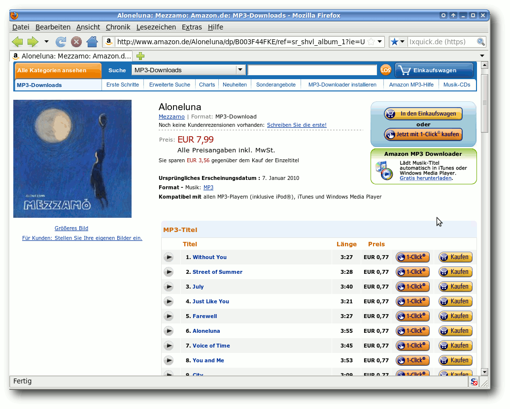
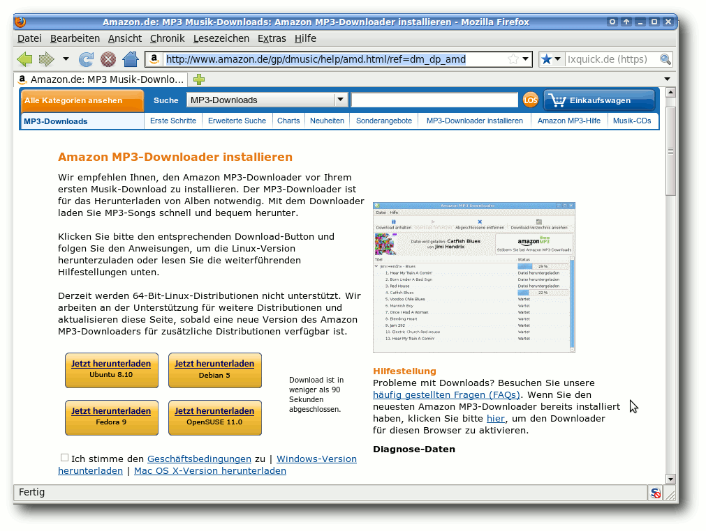

freiesMagazin September 2010 (ISSN 1867-7991)
Topthemen dieser Ausgabe
GIMP automatisieren
Wie einfach es ist, mit GIMP Bilder zu verbessern oder auch zu verschönern, wurde im Artikel „GIMP in 90 Minuten (kennenlernen)“ von Karsten Günther in freiesMagazin 01/2010 gezeigt. Verwendet man GIMP dann regelmäßig, kommt schnell der Wunsch auf, immer wiederkehrende Handgriffe, wie z. B. das Erstellen eines Rahmens oder das Einfügen eines Copyright-Vermerks, zu automatisieren. Auch hier hält GIMP das passende Werkzeug bereit: Skript-Fu. (weiterlesen)
MegaGlest – Ein historisch nicht ganz korrektes Strategiespiel
Wer unter Linux spielt und Strategiespiele à la Age of Empires mag, der könnte das ein oder andere mal bereits über den Begriff Glest gestolpert sein. Glest ist ein 3-D-Echtzeitstrategiespiel, dessen Entwicklung bereits im Jahr 2001 begann. Im Moment ist es ruhig um das Open-Source-Projekt geworden. Fans rund um das Spiel fassten sich wegen der Stille um das Projekt ein Herz und gründeten, basierend auf Glest, einen separaten Entwicklungszweig: MegaGlest genannt. (weiterlesen)
Wünsch Dir was – SUSE Studio als Tool zum eigenen Linux
Seit einiger Zeit, und ein wenig im Verborgenen, hat Novell mit SUSE Studio eine interessante Plattform bereit gestellt. Mit deren Hilfe können sich Linux-Freunde schnell und unkompliziert ihre eigene SUSE-Distribution zusammenklicken. Das funktioniert tatsächlich ebenso einfach wie es sich anhört und in dem Artikel wird gezeigt, wie es geht. (weiterlesen)
Zum Index
Inhalt
Linux allgemein
Der August im Kernelrückblick
Anleitungen
Symbian für Schlangenbeschwörer
MP3s von Amazon herunterladen
GIMP automatisieren
Software
MegaGlest – Ein Strategiespiel
SUSE Studio als Tool zum eigenen Linux
Notepad++ und Notepad2
Community
Rezension: Python – Essential Reference
Magazin
Editorial
Veranstaltungen
Konventionen
Impressum
Zum Index
Editorial
Von Viren und fremden Mächten unterwandertEin Albtraum? Oder nur die Realität?
Der CEO eines proprietären Betriebssystems ahnte es schon immer, fremde Mächte sind unterwegs und unterwandern alles … So sehen wir das auch und stellen heute fest, dass wir in der vorliegenden Septemberausgabe von freiesMagazin den ersten Artikel zu Software veröffentlichen, die nur unter Windows läuft – Freie Software wohlgemerkt. Mit dem Artikel„Notepad++ und Notepad2 – Open-Source-Editoren für Windows“ berichtet Jochen Schnelle über zwei freie Editoren, die – wie der Titel schon andeutet – unter Microsoft Windows laufen. Man mag diesen Ansatz begrüßen oder verdammen, aber man sollte es zumindest nicht ignorieren, dass Freie Software auch auf proprietären Systemen läuft. Was halten Sie davon, liebe Leser? Fänden Sie es interessant und begrüßenswert, wenn wir in Zukunft weitere Artikel dieser Art in freiesMagazin veröffentlichen würden? Teilen Sie uns Ihre Meinung mit und nehmen Sie am besten gleich an der Umfrage dazu teil [1].Ist die GPL viral?
Letzten Monat erhielten wir einen Leserbrief von Lutz Horn (im Übrigen einen von exakt zwei, was doch sehr wenig ist), in dem er einige Anmerkungen zur Rezension „Die Anarchie der Hacker“ aus freiesMagazin 08/2010 [2] hatte. Zum einen wies er darauf hin, dass der Autor Dominik Wagenführ vergessen hatte, auf das Copyleft-Konzept [3] einzugehen. In der Tat hätte es nicht geschadet, dieses zu erwähnen, um die GNU General Public License [4] besser zu verstehen. Die zweite Anmerkung betraf die schlechte Verwendung des Begriffes „viral“ für die GPL. Der Ausdruck stammt von Microsoft-Manager Craig Mundie aus dem Jahr 2001 [5], der den viralen Effekt der GPL als Bedrohung für das geistige Eigentum von Firmen angesehen hatte. Als Alternative schlug Lutz Horn die Beschreibung „Copyleft ist freiheitsübertragend“ vor. Sie können uns gerne sagen, ob Sie die Sache mit der „viralen“ Bezeichnung auch so negativ sehen oder es nicht doch zur GPL passt. Schreiben Sie uns einfach an[1] http://www.freiesmagazin.de/20100905-freie-software-fuer-windows
[2] http://www.freiesmagazin.de/freiesMagazin-2010-08
[3] http://www.gnu.org/copyleft/copyleft.html
[4] http://www.gnu.org/licenses/gpl.html
[5] http://www.microsoft.com/presspass/exec/craig/05-03sharedsource.mspx
Das Editorial kommentieren
Zum Index
Der August im Kernelrückblick
von Mathias Menzer Basis aller Distributionen ist der Linux-Kernel, der fortwährend weiterentwickelt wird. Welche Geräte in einem halben Jahr unterstützt werden und welche Funktionen neu hinzukommen, erfährt man, wenn man den aktuellen Entwickler-Kernel im Auge behält.Linux 2.6.35
Der August war keine zwei Tage alt und hatte schon die Freigabe des Kernels 2.6.35 gesehen. Dessen Neuerungen spielen sich zu größten Teil hinter den Kulissen, kaum sichtbar für die meisten Anwender, ab. Diese dürften noch am ehesten die nun nutzbaren Energiesparfunktionen einiger Radeon-Grafikkarten und AMD-Prozessoren bemerken. Dagegen eher im Hintergrund finden sich Verbesserungen der Netzwerkkommunikation. Hier stehen mit „Receive Packet Steering“ und „Receive Flow Steering“ zwei neue Techniken für die Optimierung der Arbeitsverteilung auf mehrere Prozessoren oder Kerne zur Verfügung. Receive Packet Steering verteilt die Bearbeitung von Netzwerkpaketen möglichst gleichmäßig über die verfügbaren Prozessoren/Kerne, Receive Flow Steering dagegen ordnet diese zu einem Strom von zusammengehörigen Netzwerkpakete („Flow“) der CPU zu, die auch die mit dieser Kommunikation betraute Anwendung abarbeitet (siehe „Der Mai im Kernelrückblick“, freiesMagazin 06/2010 [1]). Ebenfalls in den Bereich Netzwerk fällt die Unterstützung für Multicast-Routing-Instanzen. Hier war man bislang auf Userspace-Daemons angewiesen, um mit Multicasts (Verbindungen von einem Sender an eine bestimmte Gruppe von Empfängern) umzugehen [2]. Auch verfügt der Linux-Kernel jetzt über native Unterstützung für das „Layer 2 Tunneling Protocol“ (L2TP) [3] und ermöglicht damit den Aufbau virtueller privater Netzwerke (VPN), also die Verbindung von Rechnern über das Internet hinweg zu einem virtuellen lokalen Netzwerk (VLAN). Weniger Beachtung fand die Einführung von „delayed logging“ in das Dateisystem xfs. Diese Methode, um das Journal des Dateisystems zu schreiben, bildet das Journaling-Verhalten von ext2/ext3 und ReiserFS im Kleinen nach, die nicht sofort bei der Änderung von Daten auf den Datenträger schreiben, sondern mit leichter Verzögerung. Dadurch wird das System weniger belastet, Schreibvorgänge laufen für den Anwender schneller ab. Stürzt jedoch das System ab, bevor die Änderungen tatsächlich physisch auf den Datenträger geschrieben wurden, so kann dies zu Datenverlust führen, wie es zum Beispiel bei der Einführung von ext4 passierte, das Änderungen um bis zu 60 Sekunden verzögert geschrieben hatte (siehe „Ein Tuz für den Kernel“, freiesMagazin 04/2009 [4]). Für eine bessere Speicherverwaltung sorgt „memory compaction“, das versucht, belegte Pages zusammenzufassen. Dadurch stehen dann größere Blöcke freien Speichers zusammenhängend zur Verfügung, während der belegte Speicher ebenfalls an einem Stück ist. Die Zuweisung größerer Speicherbereich wird dadurch einfacher, da diese dann zusammenhängend zur Verfügung stehen. Verschiedene Verbesserungen gab es an Entwicklerwerkzeugen, z. B. dem Leistungsmonitor „perf“, der nun einen Live-Monitor bietet und auch Gäste der Virtualisierungstechnik KVM (Kernel-based Virtual Machine) beobachten kann, sowie dem Kernel-Debugger „Kgdb“, der nun den von SGI [5] entwickelten Debugger „KDB“ als Aufsatz erhalten hat. Letzterer ermöglicht es, das Frontend auf dem zu untersuchenden System zu betreiben, was bei Kgdb bislang nicht möglich war. Eine weitergehende Auflistung der neuen Funktionen liefert hier wieder einmal die Seite Kernel Newbies [6].Linux 2.6.36
Die Entwicklung des nächsten Kernels ist derweil bereits angelaufen. Zwei Wochen nach der Veröffentlichung von 2.6.35 schloss Torvalds das Merge Window mit der Freigabe des 2.6.36-rc1 [7] ab. Die übliche Mail zur Vorabversion gab es diesmal aufgrund von Problemen mit einem Speicherleck jedoch nicht, wie Torvalds bei der Veröffentlichung des -rc2 [8] mitteilte. Auch diesmal will Torvalds wieder standhaft bleiben und weiterhin nur Korrekturen während der weiteren Entwicklung in den Kernel aufnehmen, wobei er jedoch bei einigen Funktionen im Zusammenhang mit VFS (Virtual File System), einer Abstrahierungsschicht für Anwendungen zum Zugriff auf die Dateisysteme des Linux-Systems, ein Auge zugedrückt hat. Als eine der hervorstechendsten Neuerungen sieht Torvalds „Fanotify“, das Dateisysteme auf Änderungen überwacht und gegebenenfalls Benachrichtigungen an Prozesse und Anwendungen versendet, die im Kontext des Anwenders laufen. Weiterhin kann „Fanotify“ auch das Öffnen bestimmter Dateien verhindern. Eine Anwendung hierfür sind Malware- und Viren-Scanner, die eine Echtzeitüberwachung des Dateisystems durchführen. Trotzdem verkündete Torvalds seine Absicht, in den nächsten Jahren keine weiteren Benachrichtigungsmechanismen mehr aufzunehmen, es sei denn, sie würden mit einer besonders guten Begründung eingereicht werden. Ebenso bemerkenswert ist „workqueue“, ein Hilfsmittel zur Prozessverwaltung, das komplett überarbeitetet wurde und durch eine Minimierung der neu erzeugten Prozesse Redundanzen verhindert und damit die Leistung auf Mehrkern- und Mehrprozessor-Systemen verbessert. Daneben hat mit dem „Out-of-Memory Killer“ ein neuer Mechanismus zum Freigeben von Arbeitsspeicher Einzug gehalten, der das Verhalten des Systems verbessern soll, wenn im RAM kein freier Platz mehr zur Verfügung steht. Nach langen Jahren konnte nun AppArmor den Weg in den offiziellen Kernel finden; seit 2.6.36-rc1 ist es Bestandteil des von James Morris gepflegten Security-Subsystems [9]. AppArmor basiert auf den Linux Security Modules, einem Framework, das die Werkzeuge zur Umsetzung von Mandatory Access Control (MAC) liefert, womit die Zugriffsberechtigungen in einem System basierend auf Regeln verwaltet werden können. Damit müssen zum Beispiel openSUSE oder Ubuntu künftig zumindest mit diesem Kernelmodul nicht mehr selbst den Kernel ihrer Distribution patchen.|
Kurz erläutert: „Speicherleck“ Wird ein Bereich des Arbeitsspeichers von einem Programm belegt, jedoch nicht verwendet und/oder auch nicht mehr freigegeben, so spricht man von einem Speicherleck oder „Memory Leak“. Grund dafür kann ein Fehler im Programm sein, das sich dann zwar einen Speicherbereich reserviert, jedoch den Zeiger, der die Adresse zu diesem Bereich enthält, verliert oder überschreibt. Wird dann durch einen veränderten Zeiger ein anderer Speicherbereich ausgelesen oder gar beschrieben, so können Probleme in ganz anderen Anwendungen auftreten, wodurch das Auffinden des ursprünglichen Problems sehr schwer ist. |
Links
[1] http://www.freiesmagazin.de/freiesMagazin-2010-06
[2] http://de.wikipedia.org/wiki/Multicast
[3] http://de.wikipedia.org/wiki/Layer_2_Tunneling_Protocol
[4] http://www.freiesmagazin.de/freiesMagazin-2009-04
[5] http://de.wikipedia.org/wiki/Silicon_Graphics
[6] http://kernelnewbies.org/Linux_2_6_35
[7] http://www.pro-linux.de/news/1/16041/linux-kernel-2636-tritt-in-die-testphase-ein.html
[8] http://lkml.org/lkml/2010/8/22/105
[9] http://www.pro-linux.de/news/1/15985/apparmor-kommt-in-offiziellen-linux-kernel.html
| Autoreninformation |
| Mathias Menzer wirft gerne einen Blick auf die Kernel-Entwicklung, um mehr über die Funktion von Linux zu erfahren und seine Mitmenschen mit seltsamen Begriffen und unverständlichen Abkürzungen verwirren zu können. |
Zum Index
Symbian für Schlangenbeschwörer
von Christian Imhorst Vergleicht man Symbian mit neueren Betriebssystemen für Smartphones, wirkt es doch recht altbacken. Böse Zungen behaupten sogar, dass es das Windows 98 der mobilen Betriebssysteme sei, weil die Oberfläche seit gefühlten 10 Jahren gleich aussieht. Die Unterstützung von Open-Source-Software ist bei Symbian allerdings vorbildlich modern. Zum einen ist das Betriebssystem selbst mittlerweile Open Source [1] und zum anderen werden etliche Werkzeuge an die Hand gegeben, um freie Software zu schreiben. Eines dieser Werkzeuge heißt Python, das Nokia 2005 auf die S60-Plattform portiert hat. Da die Einarbeitungszeit für Programmieranfänger kürzer ist als in C++, kann man schnell lauffähige Programme entwickeln, die durch Module flexibel erweiterbar sind. Es ist die perfekte Gelegenheit für Freunde von GNU/Linux, Solaris oder einem BSD-System, eigene Programme zu schreiben und ihr Handy für ein größeres Aufgabengebiet fit zu machen.Installation
Nachdem man überprüft hat, ob das eigene Handy zur S60-Reihe gehört [2], benötigt man die die Datei PythonForS60_2.0.0.tar.gz von der Webseite garage.maemo.org [3]. Von der Versionsnummer darf man sich nicht irritieren lassen; Python für S60 2.0 liegt Python 2.5.4 zugrunde. Nach dem Entpacken überträgt man die Dateien Python_2.0.0.sis, pips.sis und PythonScriptShell_2.0.0_3_0.sis aus dem Ordner PyS60Dependencies entweder per Bluetooth, USB-Kabel oder WLAN [4] auf das Telefon. Anschließend installiert man sie in dieser Reihenfolge in den Telefonspeicher. Die Installation muss in den Telefonspeicher und darf nicht auf die Speicherkarte erfolgen, da Python-Programme ansonsten Probleme haben, den Python-Interpreter zu finden.Nach der Installation
Jetzt gibt es verschiedene Möglichkeiten, Python-Programme auf dem Handy auszuführen. Die einfachste ist, das Programm gleich auf dem Telefon zu tippen. Dazu öffnet man die Python-Shell und wählt „Interactive console“. Je nach Tastatur kann das Tippen auf dem Handy sehr anstrengend sein; der schöne Nebeneffekt ist aber, dass man auch in der S-Bahn oder an der Supermarkt-Kasse mit einem Python-Editor wie Ped [5] programmieren kann. Die Menschen um einen herum denken dann, dass man sehr beliebt sein muss, weil man eine SMS nach der anderen schreibt, und man wird ausnahmsweise mal nicht für einen vereinsamten Ober-Geek gehalten.Eine Python-Shell fürs Handy
Im Lieferumfang von Python für S60 gibt es zwar schon eine Bluetooth-Konsole [6], die man auch sehr komfortabel mit den PUTools bedienen kann [7], aber was macht man, wenn kein Bluetooth, dafür aber WLAN vorhanden ist? Man richtet sich einfach eine Python-Shell übers WLAN ein. Die Verbindung zur WLAN-Shell steht auch schneller als die über Bluetooth, was ein entscheidender Vorteil ist, selbst wenn der Rechner über eine Bluetooth-Schnittstelle verfügt. Damit die Python-Shell über WLAN funktioniert, benötigt man das Programm netcat, das im Normalfall unter GNU/Linux, Unix oder MacOS X schon installiert ist. Mit dem Befehl nc startet man das Kommando, um Daten mit TCP im Netzwerk zu übertragen:
# stty raw -echo ; nc -l 1025 ; stty sane |
#!/bin/bash
# Script: wifishell.sh
# Object: Starts TCP/IP Console
# for S60 mobiles afterwards
# start wifishell.py on your
# S60
IP=$(ifconfig | grep 'inet '| grep -v '127\.0\.0\.1' | cut -d: -f2 | awk '{ print $1}')
PORT="1025"
echo "Your IP address is: $IP "
echo "Start now wifishell.py on your phone ..."
stty raw -echo ; nc -l 1025 ; stty sane
|
IP=$(ifconfig | grep -E 'inet.[0-9]' | grep -v '127\.0\.0\.1' | awk '{ print $2}')
|
IP=$(ifconfig -a | grep 'inet ' | grep -v '127\.0\.0\.1' | awk '{ print $2}')
|
# Script: wifishell.py
# Object: Starts TCP/IP Console
# for S60 mobiles before start
# wifishell.sh on your Unix box
import btconsole, appuifw
import sys
try: # next lines are important to select an access point
sys.modules['socket'] = __import__('btsocket')
except ImportError:
pass
import socket
ip = appuifw.query(u"IP address:", "text")
port = 1025
sock=socket.socket(socket.AF_INET, socket.SOCK_STREAM)
sock.connect((str(ip), port))
btconsole.run_with_redirected_io(sock,btconsole.interact,None,None,locals())
sock.close()
|
$ stty raw -echo ; nc -l 1025 ; stty sane Python 2.5.4 (r254:67916, Nov 6 2009, 04:18:57) [C] on symbian_s60 >>> import appuifw >>> appuifw.note(u'Hallo Welt!', 'info') |
Hallo Welt!
Als erstes Programm in Python für S60 schreibt man klassischerweise eines, das „Hallo Welt!“ auf dem Bildschirm ausgibt. Das wird in diesem Fall schon mit einer grafischen Oberfläche gemacht, was ganz leicht ist. Man lädt dazu einfach das Modul appuifw.
>>> import appuifw >>> appuifw.note(u'Hallo Welt!', 'info') |
Der erste Programmierergebnis mit Python.
Neben appuifw für das Erstellen von Benutzeroberflächen können noch weitere spezielle Module für PyS60 in Programme importiert werden. Das sind e32 als Schnittstelle zum Betriebssystem, sysinfo liest Geräteinformationen aus, audio zeichnet Klänge auf und spielt sie ab, e32calendar ermöglicht den Zugriff auf den Kalender, camera auf die Kamera, contacts auf Kontakte, e32dbm auf die Datenbank, location auf die Standortinformationen, messaging auf SMS-Funktionen, telephone auf die des Telefons und graphics zeichnet grafische Elemente [8]. Mit jedem einzelnen Modul kann man eine Menge Sachen anstellen, zum Beispiel das Handy etwas sagen zu lassen:
import audio audio.say(u"Hello World!") |
import audio, e32 fn = u"e:\\Musik\\mymusic.mp3" sound = audio.Sound.open(fn) sound.play(times=1) e32.ao_sleep(sound.duration()/1000000 + 3) sound.close() |
import messaging, appuifw contact_number = "+49123456789" contact_name = "Linus" message = (u"SOS, ruf mich an.") messaging.sms_send(contact_number, message, name=contact_name) appuifw.note(u"Die Nachricht wurde gesendet", "info") |
import appuifw, sysinfo battery = sysinfo.battery() appuifw.note(u'Battery: ' + str(battery) + ' %', 'info') |
SIS-Pakete selber bauen
Nun kann es ganz schön lästig sein, immer diesen Weg einzuschlagen, wenn man mal kurz den Ladezustand überprüfen will. Einfacher ist es doch, gleich das Skript ohne Umweg über die Python-Shell zu starten. Dabei hilft das Programm ensymble [9]. Bei vielen Distributionen ist es in den Paketquellen enthalten, da es aber „nur“ ein Python-Skript ist, kann man die Datei auch einfach von der Webseite herunterladen. Mit ensymble gibt es allerdings ein kleines Problem: Das Skript benötigt Python 2.5. Das wird besonders diejenigen nicht freuen, die Ubuntu 10.04 „Lucid Lynx“ benutzen, da dort die älteste Python-Version 2.6 ist. Wer kein Python 2.5 besitzt, sollte es kompilieren, und zwar mit Zlib-Unterstützung. Die freie Programmbibliothek zum Komprimieren und Dekomprimieren von Daten ist bei Python 2.5 standardmäßig deaktiviert, wird aber von ensymble benötigt [10]. Ist ensymble heruntergeladen und steht Python 2.5 mit Zlib-Unterstützung bereit, müssen nur noch die Dateien ensymble.py, ein Skript (zum Beispiel das Skript für den Ladezustand des Akkus, das man batinfo.py nennen kann) und eine SVG-Datei als Icon im selben Ordner liegen. Für die SVG-Datei kann man sich für den Anfang gut bei den Icons des GNOME-Projekts unter /usr/share/icons/gnome/scalable bedienen, wenn man zu bequem ist, ein eigenes zu basteln. Dann kann die Verwandlung des Skripts in eine Installationsdatei für Symbian beginnen:
$ python2.5 ensymble.py py2sis --version=1.0.0 --icon=battery-low.svg --caption="Battery Info" --vendor="Christian Imhorst" batinfo.py batinfo.sis |
Das hochgeladene Skript findet man im Installationsordner wieder.
Zum Schluss …
… noch ein kleines Programm, um die Kalenderdatenbank des Telefons auszulesen und in einer Datei zu sichern. Die Termine kann man anschließend in den Kalender von Evolution oder Thunderbird importieren. Für solche kleinen Aufgaben ist Python für S60 einfach ideal:
# vcalendar export import e32calendar, appuifw cal = e32calendar.open() if len(cal) == 0: appuifw.note( u"No calendar entries.", "info" ) id_list=list() for id in cal: id_list.append(id) vCal = cal.export_vcalendars(tuple(id_list)) # define the directory and file name vCalendar = u"e:\\vCal.vcf" # create file file = open(vCalendar, 'w') # write vcal into file and close the file file.write(vCal) file.close() appuifw.note( u"Success!", "info" ) |
Literatur
- Jürgen Scheible und Ville Tuulos, „Mobile Python: Rapid prototyping of applications on the mobile platform“, 2007
- Jürgen Scheible, „Python for S60 Tutorial“ [11]
[1] http://www.heise.de/newsticker/meldung/Symbian-wird-komplett-Open-Source-921815.html
[2] http://de.wikipedia.org/wiki/S60
[3] https://garage.maemo.org/
[4] http://www.datenteiler.de/ein-kleiner-webserver-mit-python/
[5] http://code.google.com/p/ped-s60/
[6] http://www.datenteiler.de/mobiles-python-ii/
[7] http://www.datenteiler.de/mit-gnulinux-fuer-pys60-entwickeln/
[8] http://pys60.garage.maemo.org/doc/s60/
[9] http://code.google.com/p/ensymble/
[10] http://www.datenteiler.de/wie-man-python-2-5-mit-zlib-kompiliert/
[11] http://www.mobilenin.com/
| Autoreninformation |
| Christian Imhorst hat wegen Appstore-Zwang, iTunes und der ständigen Gängelung durch Apple sein iPhone gegen ein Nokia E71 eingetauscht. Ein Android-Gerät kommt vielleicht später einmal, schließlich gibt es ja SL4A (Scripting Layer for Android). |
Zum Index
MP3s von Amazon herunterladen
von Dominik Wagenführ Musik wird heutzutage in vielen Fällen nur noch ohne physische Datenträger gehört. Sei es per MP3 oder OGG, in der Regel spielt die gekaufte Musik auf einem mobilen Musikabspielgerät oder direkt auf dem PC. Umso wichtiger ist es daher, dass man die Musik gleich im passenden Format kaufen kann und nicht erst die gekaufte CD in ein benutzbares Format wandeln muss. Einer der großen Verkäufer von Musik zum Herunterladen ist Amazon [1]. Bei Amazon gibt es fast alle neueren und auch die meisten älteren Musikstücke im MP3-Format. Dieses ist zwar nicht so verlustfrei wie OGG bei der Komprimierung, hat sich aber dennoch im letzten Jahrzehnt als mobiles Musikformat durchgesetzt. Amazon bietet Einzeltitel direkt zum Kauf an, indem man sie einfach in den Einkaufswagen legt. Ganze MP3-Alben kann man auf diese Art aber nicht kaufen, das erfordert (normalerweise) den speziellen Amazon MP3-Downloader.Installation
Auf der Amazon-Webseite gibt es bei jedem MP3-Album bzw. -Titel rechts oben unter dem Einkaufswagen auch den Link zum Amazon MP3-Downloader. Auch wenn in der Kurzbeschreibung nur von iTunes und dem Windows Media Player gesprochen wird, gibt es die Software auch für Linux. Der Downloadknopf funktioniert auch mit Linux.
Auf der Amazon-Downloadseite [2] findet man Pakete für Einige der am weitest verbreiteten Distributionen: Ubuntu 8.10, Debian 5, Fedora 9 und openSUSE 11.0. Dies sind zwar alle etwas ältere Versionen, aber selbst wenn man eine neuere Version dieser Distributionen einsetzt, sollte der Einsatz kein Problem sein. Eine Ausnahme ist das neueste Ubuntu 10.04 „Lucid Lynx“, da hier einige benötigte Bibliotheken nicht mehr vorhanden sind und erst manuell nachinstalliert werden müssen [3]. 
Es gibt Pakete für einige Distributionen.
Nach dem Download des jeweiligen Pakets installiert man das DEB- bzw. RPM-Paket manuell wie es die eigene Distribution erfordert. Gegebenenfalls kommt es zu Fehlern, weil einige Abhängigkeiten nicht installiert sind. Das Amazon-Paket erfordert folgende zusätzliche Bibliotheken, die bei den meisten Distributionen nicht als Standard installiert sind:
- libboost-date-time1.34.1
- libboost-filesystem1.34.1
- libboost-iostreams1.34.1
- libboost-regex1.34.1
- libboost-signals1.34.1
- libboost-thread1.34.1
Installation in 64-Bit-Systemen
Leider gibt es von Amazon keine Version für 64-Bit-Systeme. Hier kann man aber etwas nachhelfen. Unter Ubuntu kann man beispielsweise mittels
# dpkg -i --force-architecture amazonmp3.deb |
# getlibs /usr/bin/amazonmp3 |
Benutzung
Durch den Aufruf von amazonmp3 wird der Amazon-MP3-Downloader gestartet. Die Oberfläche des Programms ist sehr übersichtlich. Beim ersten Start landet man auf der Amazon-Webseite, denn nur dort kann man die Musik herunterladen. Bei den folgenden Starts des Programms klickt man auf den Amazon-MP3-Knopf, der mit „Stöbern Sie bei Amazon Mp3-Downloads“ beschriftet ist.Die Oberfläche wirkt sehr aufgeräumt.
Im Amazon-Shop legt man sich das MP3-Album bzw. die einzelnen MP3-Titel in den Einkaufswagen und bezahlt dies ganz regulär. Nach der Bezahlung wird man aufgefordert, eine AMZ-Datei zu speichern bzw. diese gleich mit dem Amazon MP3-Downloader zu öffnen.
Die AMZ-Datei sollte man sich auf der Festplatte sichern.
Hat man die Datei auf der Festplatte gespeichert, geht man im Amazon MP3-Downloader auf „Datei Pfeil rechts AMZ-Datei öffnen“ und wählt die eben gespeicherte AMZ-Datei aus. Daraufhin wird auch gleich der Download der gekauften Dateien gestartet. Die Daten werden automatisch im Ordner Amazon MP3 im Homeverzeichnis gespeichert. Das Verzeichnis kann man aber über „Datei Pfeil rechts Einstellungen ...“ anpassen.
Die Musikdateien werden automatisch heruntergeladen.
Nach dem Download kann man das Download-Verzeichnis öffnen (lassen) und die Musik normal abspielen. Hinweis: Wenn man die AMZ-Datei mit dem Amazon MP3-Download öffnet, wird diese von der Festplatte entfernt. Es empfiehlt sich also die Datei zu sichern, möchte man die Musik später ein zweites Mal herunterladen. Eine zweite Zusendung der Datei seitens Amazon ist nicht möglich. (Es ist aber nicht klar, wie lange die Datei gültig ist, sprich wie lange man nach dem Download der AMZ-Datei die Lieder herunterladen kann.) Sollte es zu Problemen kommen, schadet ein Blick in die Amazon-FAQ [5] sicherlich nicht.
Alternativen
Clamz
Mittels Clamz [6] können die AMZ-Dateien ebenfalls geöffnet werden. Leider gibt es kein fertiges Paket auf der Webseite, sodass man sich die Software selbst kompilieren muss. Dafür benötigt man neben einem C++-Compiler auch die Entwicklerpakete von libcrypt, libcurl und libexpat. Danach kann man das heruntergeladene TAR-Archiv entpacken und kompilieren:
$ tar xfvz clamz-0.4.tar.gz $ cd clamz-0.4 $ ./configure $ make |
# make install |
# checkinstall |
$ clamz AmazonMP3-1281195544.amz |
Pymazon
Pymazon [7] basiert auf Clamz (benötigt dies aber nicht) und ist, wie der Name andeutet, in Python geschrieben. Das Programm bietet eine grafische Oberfläche ähnlich dem Amazon MP3-Downloader. Für die Benutzung benötigt man die Programme PyCrypto und PyQt4 bzw. PyGtk. Nach dem Download des TAR-Archives kann man dieses entpacken und die Installation starten:
$ tar -xzf Pymazon-0.9.tar.gz $ cd Pymazon-0.9 # python setup.py install |
# checkinstall python setup.py install |
toolkit = gtk |
Auch Pymazon lädt die MP3-Titel problemlos herunter.
Fazit
Mittels der verschiedenen Downloadclients wird das Herunterladen ganzer MP3-Alben von Amazon zum Kinderspiel. Einzig die Installation der Programme erfordert (auf neueren und/oder auf 64-Bit-Systemen) noch zu viel Handarbeit. Ein fertiges Paket, welches man über die Paketverwaltung installieren kann, wäre wünschenswert. Am leichtesten war aber Pymazon zu bedienen und zu installieren. Da es sich um Freie Software handelt (Pymazon wird unter der GNU General Public License Version 3 vertrieben), ist diese dem proprietären Amazon Mp3-Downloader vorzuziehen, zumal die Anwendung auch auf neueren und 64-Bit-Systemen ohne Probleme funktioniert. Hinweis: Das für diesen Artikel gekaufte Album „Aloneluna“ von Mezzamo ist sehr empfehlenswert und kann auf der Homepage der Band [8] oder bei Jamendo [9] auch kostenlos heruntergeladen werden. Die Musik unterliegt dabei einer Creative-Commons-Lizenz [10]. Links[1] http://www.amazon.de/
[2] http://www.amazon.de/gp/dmusic/help/amd.html/ref=dm_dp_amd
[3] http://wiki.ubuntuusers.de/Amazon_MP3-Downloader
[4] http://ubuntuforums.org/showthread.php?t=474790
[5] http://code.google.com/p/clamz/
[6] http://code.google.com/p/pymazon/
[7] http://mezzamo.blogspot.com/p/downloads.html
[8] http://www.jamendo.com/de/album/58888
[9] http://creativecommons.org/licenses/by-nc-nd/3.0/
| Autoreninformation |
| Dominik Wagenführ liebt Musik – vor allem wenn sie frei ist. Wenn eine Band keinen Spendenknopf auf ihrer Webseite hat, ist der Kauf über Amazon eine gute Alternative, der Band etwas Unterstützung zukommen zu lassen. |
Zum Index
GIMP automatisieren
von Ralf Damaschke Wie einfach es ist, mit GIMP Bilder zu verbessern oder auch zu verschönern, wurde im Artikel „GIMP in 90 Minuten (kennenlernen)“ von Karsten Günther in freiesMagazin 01/2010 [1] gezeigt. Verwendet man GIMP dann regelmäßig, kommt schnell der Wunsch auf, immer wiederkehrende Handgriffe, wie z. B. das Erstellen eines Rahmens oder das Einfügen eines Copyright-Vermerks, zu automatisieren. Auch hier hält GIMP das passende Werkzeug bereit: Skript-Fu [2]. Wer die Aktionen von Photoshop kennt, wird beim ersten Kontakt mit Skript-Fu mächtig enttäuscht sein. Man kann weder ein Makro aufzeichnen noch gibt es einen integrierten Editor, der einem bei den ersten Schritten ein wenig unter die Arme greift und z. B. Syntaxfehler gleich hervorhebt. Selbst das Anlegen eines neuen Skripts muss händisch im Skriptordner erledigt werden. Um die Leidensfähigkeit des Nutzers wirklich zu testen, ist Skript-Fu zudem eine Scheme-basierte Sprache, aber dazu später mehr. Es soll noch darauf hingewiesen werden, dass es für alle, die sich mit Skript-Fu nicht anfreunden können, als Alternative Python-Fu gibt. Im Rahmen dieses Artikels wird aber nicht weiter auf Python-Fu eingegangen; alle Interessierten seien für den Einstieg an gimp.org [3] verwiesen. Trotz aller Widrigkeiten lohnt es aber, sich mit Skript-Fu zu befassen. Nach einer gewissen Eingewöhnungszeit lassen sich in kurzer Zeit Skripte erstellen, die den Funktionsumfang von GIMP auf die eigenen Bedürfnisse anpassen.Skript-Fu
Die Syntax von Skript-Fu ist wie bereits erwähnt doch recht gewöhnungsbedürftig und kann in den GIMP-Tutorials [4] eingehend von Grund auf erlernt werden. In diesem Artikel wird nur das Nötigste besprochen, um einen schnellen Einstieg in das Beispielskript zu schaffen. Unter „Filter Pfeil rechts Skript-Fu Pfeil rechts Konsole“ in GIMP kann die Skript-Fu-Konsole aufgerufen werden, um die Beispiele unten nachzuvollziehen. Die Eingabe muss dabei einzeilig sein; sie wird mit „Enter“ abgeschlossen.Skript-Fu-Konsole mit den Beispielen.
Syntax
Scheme [5] und damit auch Skript-Fu verwendet die Präfixnotation [6], d. h. der Operator wird den Operanden vorangestellt. Aus einer üblichen Addition
12 + 2 |
(+ 12 2) |
Klammernpaar-Hervorhebung bei Kate.
Variablen
Hauptsächlich werden Variablen in Skript-Fu mit let* lokal deklariert und können bei der Deklaration auch mit einem Defaultwert initialisiert werden. Das Zuweisen eines neuen Wertes im Skript erfolgt mit set!:|
(let* ( Variablen ) Ausdrücke in denen die Variablen gültig sind )
|
|
(let* ( (varNum1 5)
(varNum2 10)
(Ergebnis)
)
(set! Ergebnis (+ varNum1 varNum2))
)
|
'(0 0 0) ;definiert die Farbe Schwarz
'("Erster Eintrag" 2 3) ;ist auch eine moegliche Liste
|
(car '(1 2 3)) (cdr '(1 2 3)) |
(car (cdr '(1 2 3)) |
(cdr (cdr '(1 2 3)) |
(cadr '(1 2 3)) (cddr '(1 2 3)) |
Funktionen
Funktionen werden wie folgt definiert.
(define ( Funktionsname Parameter1 Parameter2 ) Ausdruecke ) |
(Funktionsname 1 "String") |
Abfragen
Eine If-Abfrage wird in Scheme wie folgt geschrieben:
(if (bedingung) (then-block) (else-block) ) |
(if (= (gimp-image-base-type bild) 2) (gimp-image-convert-rgb bild) ) |
(begin Anweisung1 Anweisung2) |
Skripte erstellen
Nachdem die Syntax nun bekannt ist, wird es Zeit, ein Beispielskript zu erstellen. Als Beispiele sollen drei kleinere Skripte zur automatischen Einhaltung von Beschränkungen beim Bildupload auf Online-Plattformen dienen. Zuerst wird das Größenlimit durch Skalieren des Bildes eingehalten, dann kann noch ein optionaler Rahmen zur Kontrasterhöhung gezogen werden und natürlich darf ein eingebetteter Copyright-Hinweis nicht fehlen. Bevor man sich um den eigentlichen Code kümmert, braucht man einen Container, in den man die gewünschte Funktionen einfügen kann. Dazu erstellt man eine leere Textdatei im Ordner /home/BENUTZERNAME/.gimp-2.6/scripts mit der Endung scm. Diese Endung ist wichtig, da GIMP nur Dateien mit dieser Endung nach Code durchsucht. Der Dateiname spielt dabei für GIMP keine Rolle, er dient lediglich als Unterscheidung zwischen den Dateien für das Dateisystem und natürlich zum einfacheren Wiederfinden der Skripte durch den Programmierer. In der leeren Datei kann jetzt die neue Funktion erstellt werden:
;Skaliert das Bild auf max. Groesse (define (BildSkalieren inBild inMax ;Variablendeklarationen (let*( (varBreite (car (gimp-image-width inBild))) (varHoehe (car (gimp-image-height inBild))) ) ;hier wird das Bild verkleinert );endLet );endDefine |
(script-fu-register "BildSkalieren" ;Aufzurufende Funktion "<Image>/Online/Forum XY..." ;Name und Position in GIMP "Passt das Bild fuer die Veroeffentlichung \ im Forum XY an (Skalierung,Rahmen,Copyr)." "Ralf Damaschke" "Copyright (C) 2010 Ralf Damaschke under \ terms of GNU General Public License Version3" "Jul 14, 2010" SF-IMAGE "Input image" 0 SF-ADJUSTMENT "maximale Groesse" '(900 1.0 3000 1.0 0 0 0) ) |
Das neu erstellte Menü mit Tooltip.
Der Parameter danach ist ein Hilfetext, der auch als Tooltip im Menü angezeigt wird, gefolgt von Autor, Copyright und Erstellungsdatum. Danach kann die Verwendung der Funktion auf bestimmte Bildtypen eingeschränkt werden (z. B. RGB). Ist dieser Parameter leer, kann das Skript auf alle Bildtypen angewendet werden. Nach diesen festen Parametern kann man noch weitere nach Bedarf frei definieren. Fast immer werden mit den Parametern SF-IMAGE und SF-DRAWABLE Zeiger auf das aktuelle Bild und die aktive Ebene an die Funktion übergeben. Man kann aber auch interaktiv Eingaben vom Benutzer abfragen, in diesem Beispiel mit SF-ADJUSTMENT die maximal zulässige Größe des Bildes (in Pixel). Alle möglichen Parameter und ihre Verwendung sind im GIMP-Benutzerhandbuch im Abschnitt „3.4.7. Die Skriptparameter registrieren“ aufgeführt [7]. Nach dem Speichern der Datei müssen die Informationen in GIMP aktualisiert werden, entweder durch einen Neustart von GIMP oder durch „Filter Pfeil rechts Skript-Fu Pfeil rechts Skripte auffrischen“. Sollte in einer der Funktionen ein Syntaxfehler sein, deaktiviert GIMP das Skript – beim Starten ohne sichtbaren Fehler, beim Ausführen von „Skripte auffrischen“ mit einer Fehlermeldung. Leider sind diese Fehlermeldungen nicht sehr hilfreich. Vergisst man z. B. eine Klammer, erscheint lediglich die Fehlermeldung „Error: unmatched parentheses: 1“. Ein Hinweis auf die fehlerhafte Zeile fehlt, die Zahl hinter dem Fehler ist eine Fehlernummer.
Fehlermeldung bei einer fehlenden Klammer.
Beispiele
Bilder skalieren
Nachdem jetzt das Gerüst steht, wird es Zeit, das Skript mit Leben zu füllen. Zuerst wird die richtige GIMP-Funktion für das Skalieren eines Bildes benötigt. Am einfachsten lässt sich diese mit dem Skript-Fu-Prozeduren-Browser finden. Er wird über den „Durchsuchen…“-Knopf in der Skript-Fu-Konsole aufgerufen und listet alle verfügbaren Befehle (auch die eigenen Skripte) mit Hilfetexten auf. Leider sind alle Prozedurnamen wie auch die Hilfetexte ausschließlich in Englisch. So sucht man am besten nach „scale“ und bekommt eine Auswahl von zehn Prozeduren angezeigt.Der Skript-Fu-Prozedur-Browser.
Ist die richtige Prozedur gefunden, kann man sie, mitsamt den benötigten Parametern, durch Drücken des „Anwenden“-Knopfes in die Eingabezeile der Skript-Fu-Konsole übertragen. Von hier wird sie via Copy & Paste in das eigene Skript kopiert. In diesem Beispiel also die Prozedur gimp-image-scale:
(gimp-image-scale image new-width new-height) |
;Neue Breite und Hoehe nach laengster Kante berechnen (if (< varHoehe varBreite) (begin ;Querformat-Block (set! varNeueBreite inMax) (set! varNeueHoehe (/ varHoehe(/ varBreite varNeueBreite))) );then (begin ;Hochformat-Block (set! varNeueHoehe inMax) (set! varNeueBreite (/ varBreite (/ varHoehe varNeueHoehe))) );else );endIf |
;Groesse aendern (gimp-image-scale inBild varNeueBreite varNeueHoehe ) |
Copyrightvermerk
Wie schon am Anfang des letzten Kapitels erwähnt, soll bei Bedarf auch ein Copyrightvermerk in das Bild eingefügt werden. Bevor man sich jedoch auf den Code stürzt, sollte man überlegen, wie sich das Gewünschte unter GIMP realisieren lässt. Für einen Copyrightvermerk würde man- mit dem Textwerkzeug in einer neuen Textebene eine Textbox erstellen,
- den Text eingeben und ggf. die Schriftart anpassen,
- die Textbox an der richtigen Stelle platzieren und
- die Deckkraft der Textebene anpassen, damit der Schriftzug nicht so heraussticht.
;Copyright einfuegen (define (CopyRight ;Funktionsname inBild ;erster Uebergabeparameter inSchriftHoehe ;zweiter Uebergabeparameter ) ;Platzhalter fuer den Code );enddefine ;#=========================================== ;# Im GIMP Menue registrieren (script-fu-register "CopyRight" "<Image>/Online/Copyright einfuegen..." "Fuegt ein Copyrightvermerk ein" "Ralf Damaschke" "Copyright (C) 2010 Ralf Damaschke under \ terms of GNU General Public License Version3" "Jul 14, 2010" SF-IMAGE "Input image" 0 SF-ADJUSTMENT "Schrifthoehe" '(10 1.0 100 1.0 0 0 1) ) |
SF-STRING "Copyrightvermerk" "(C) Ralf Damaschke" |
;Variablendeklarationen (let*( (varEbene (car (gimp-image-get-active-layer inBild))) (varBreite (car (gimp-image-width inBild))) (varHoehe (car (gimp-image-height inBild))) (varText "(C) Ralf Damaschke") (varSchriftart "Century Schoolbook L Bold Italic") (varAbstand 20) (varTextDimensionen) (varX_Pos) (varY_Pos) (varTextEbene) ) |
;Hoehe berech. nach laengster Seite (if (= inSchrifthoehe 0) ;Wenn keine Schrifthoehe angegeben ist... (begin (if (< varHoehe varBreite) (set! inSchrifthoehe (/ varBreite 40));then (set! inSchrifthoehe (/ varHoehe 40));else );endIf );endbegin );endIf |
;Abstand = anderthalfache Schriftgroesse (set! varAbstand (* inSchrifthoehe 1.5)) ;Schrifthoehe und Laenge in eine Liste (set! varTextDimensionen (gimp-text-get-extents-fontname varText inSchrifthoehe PIXELS varSchriftart) );endset ;Die Schriftpositionen berechnen (set! varX_Pos (- varBreite (+ (car varTextDimensionen) varAbstand))) (set! varY_Pos (- varHoehe (+ (caddr varTextDimensionen) varAbstand))) |
;Einstellungen sichern (gimp-context-push) (gimp-image-undo-group-start inBild) |
;Vordergrundfarbe anpassen (gimp-context-set-foreground '(0 0 0)) ;Text-Layer einfuegen (set! varTextEbene (car (gimp-text-fontname inBild -1 ;neues TextLayer varX_Pos varY_Pos varText -1 ;Ramen=0 TRUE ;Antialias inSchriftHoehe PIXELS varSchriftart))) |
;Text-Layer umbenennen (gimp-drawable-set-name varTextEbene "Copyright") |
;Text-Layer Transparenz anpassen (gimp-layer-set-opacity varTextEbene 80) |
;die urspruengliche Ebene anwaehlen (gimp-image-set-active-layer inBild varEbene) (gimp-displays-flush) (gimp-image-undo-group-end inBild) (gimp-context-pop) |
Einfacher Rahmen
Um das eigene Bild gegen die Hintergrundfarbe des Forums abzuheben, ist ein kleiner Rahmen mit ca. 2 Pixel Breite sinnvoll. Um solch einen Rahmen in GIMP zu erstellen, geht man wie folgt vor:- Man vergrößert die Leinwand oder verkleinert die Bildebene,
- fügt eine neue Ebene ein, mit der gewünschten Rahmenfarbe als Füllfarbe,
- setzt die neue Ebene hinter die Bildebene und
- vereint die Ebenen zu einem Bild.
Die Beispiele verbinden
Die ursprüngliche Aufgabe war, eine Funktion zu erstellen, die das Bild nach den Vorgaben eines Forums oder einer Online-Plattform bearbeitet. Mit den beiden bis jetzt erstellten Dateien lassen sich nur die Bilder skalieren und nach einem weiteren Mausklick ein Copyrightvermerk einfügen. Um die Aufgabe zu erfüllen, wird noch eine weitere Funktion benötigt. Sie wird nach dem Forum oder Portal benannt und in der Datei mit der Funktion FarbRahmen und BildSkalieren gespeichert.
;Bild fuer das ForumXY anpassen (define (Forum_XY inBild) );endDefine |
(BildSkalieren inBild 996) |
(CopyRight run-mode image value) |
(CopyRight inBild 0) (gimp-image-flatten inBild) |
(FarbRahmen inBild 2 '(0 0 0)) |
;Bild fuer das ForumXY anpassen (define (Forum_XY inBild) ;Einstellungen sichern (gimp-context-push) (gimp-image-undo-group-start inBild) ;Bild bearbeiten (BildSkalieren inBild 996) (CopyRight inBild 0) (gimp-image-flatten inBild) (FarbRahmen inBild 2 '(0 0 0)) ;Einstellungen wiederherstellen (gimp-displays-flush) (gimp-image-undo-group-end inBild) (gimp-context-pop) );endDefine |
Ein Beispielbild bearbeitet mit Forum_XY.
Bei der Vorstellung der Funktion FarbRahmen wurde erwähnt, dass man sie auch mehrmals aufrufen kann, um z. B. ein Passepartout zu erzeugen. Dies soll für die Veröffentlichungen in der FotoCommunity verwendet werden und kann wie folgt aussehen:
;Bild fuer fc anpassen (define (fotocommunity inBild) ;Einstellungen sichern (gimp-context-push) (gimp-image-undo-group-start inBild) ;Bild bearbeiten (BildSkalieren inBild 936) ;zweifarbiger Rahmen (FarbRahmen inBild 2 '(0 0 0)) (FarbRahmen inBild 30 '(255 255 255)) ;Copyright in den weissen Rand platzieren (CopyRight inBild 10) (gimp-image-flatten inBild) ;Einstellungen wiederherstellen (gimp-displays-flush) (gimp-image-undo-group-end inBild) (gimp-context-pop) );endDefine |
Dasselbe Bild mit FotoCommunity bearbeitet.
Fazit
Mit Skript-Fu lässt sich GIMP an die eigenen Bedürfnisse anpassen und immer wiederkehrende Aufgaben können mit einem Mausklick erledigt werden. Dabei sind der Fantasie keine Grenzen gesetzt und die vorgestellten Skripte sind nur sehr einfache Beispiele, um die Arbeitsweise zu verdeutlichen. Komplexere Beispiel gibt es zuhauf im Internet [9] [10]. Besonders schön ist die Möglichkeit, Dimensionen im Bild zu berechnen und dadurch ein immer gleiches Aussehen zu erzeugen, egal wieviel Megapixel die zu bearbeitenden Bilder haben. So werden z. B. die Schatten an den Bildern im freiesMagazin über ein Skript erstellt, das ohne Zutun des Benutzers die Satzrichtline umsetzt. Leider ist Scheme als Sprache nicht besonders benutzerfreundlich, und ich habe mich bis jetzt noch nicht mit ihr anfreunden können. Ein anderer Kritikpunkt ist die Hilfe: Zwar sind alle Funktionen in der Konsole beschrieben, aber eben nur in Englisch. Passende Anwendungsbeispiele muss man sich im Internet suchen, und so wird die Funktion so manches Parameters erst nach zeitraubender Recherche deutlich. Besonders schade ist, dass GIMP nur über Skripte zu steuern ist. Natürlich hat das auch Vorteile, aber es gibt viele Anwender, die keine Programmiersprache beherrschen. Ihnen würde ein Makrorekorder oder eine „grafische“ Programmierung den Einstieg erleichtern. Alles im allem sind die Hürden aber zu meistern und hat man sich erst an die Eigenarten gewöhnt, macht es riesig Spaß, GIMP mit Skript-Fu zu automatisieren. Links[1] http://www.freiesmagazin.de/freiesMagazin-2010-01
[2] http://wiki.gimpforum.de/wiki/Skript-Fu
[3] http://www.gimp.org/docs/python/index.html
[4] http://docs.gimp.org/2.6/de/gimp-using-script-fu-tutorial.html
[5] http://de.wikipedia.org/wiki/Scheme
[6] http://de.wikipedia.org/wiki/Polnische_Notation
[7] http://docs.gimp.org/de/gimp-using-script-fu-tutorial-first-script.html
[8] http://en.wikipedia.org/wiki/Typeface#Font_metrics
[9] http://www.td-e.com/soft-de/watermark-it.php
[10] http://www.gimphelp.org/script24.shtml
| Autoreninformation |
| Ralf Damaschke ist begeisterter Hobbyfotograf und verwendet seit Jahren diverse Bildbearbeitungsprogramme, um seine Bilder nachzuarbeiten. Als Setzer bei freiesMagazin muss er immer wieder Schlagschatten in definierte Größen zu Bildern hinzufügen; diese Aufgabe erledigt heute ein Skript-Fu. |
Zum Index
MegaGlest – Ein historisch nicht ganz korrektes Strategiespiel
von Michael Schwarz Wer unter Linux spielt und Strategiespiele à la Age of Empires mag, der könnte das ein oder andere mal über den Begriff Glest [1] gestolpert sein. Glest ist ein 3-D-Echtzeitstrategiespiel, dessen Entwicklung bereits im Jahr 2001 begann. Im Moment ist es ruhig um das Open-Source-Projekt [2] geworden. Man könnte fast meinen, zu ruhig. Fans rund um das Spiel fassten sich wegen der Stille um das Projekt ein Herz und gründeten, basierend auf Glest, einen separaten Entwicklungszweig [3]: MegaGlest [4] genannt. Was MegaGlest genau ist, worin die Unterschiede zum bisherigen Glest bestehen und mit welcher Vielfalt die einzelnen Fraktionen aufeinander losgehen, darauf wird in den folgenden Zeilen etwas genauer eingegangen.Aus Glest wurde MegaGlest.
Installation
Zuallererst sei dem Projekt und dessen Entwicklern zugutegehalten, dass für MegaGlest eigens eine grafische Installation angefertigt wurde. Somit ist es selbst für frisch gebackene Ex-Windowsler oder generell nicht allzu versierte Linuxbenutzer ein leichtes Unterfangen, das Spiel in seiner Pracht auf die eigene Festplatte zu zaubern. Nach dem abgeschlossenen Download des Installationsprogramms kann es allenfalls nötig sein, diesem das Recht zu gewähren, ausgeführt zu werden. Dazu ruft man eine Konsole auf, wechselt in das Verzeichnis in dem sich das heruntergeladene Installationsprogramm befindet und führt den Befehl
$ chmod a+x Mega-Glest-Installer-*.*.*_i386_linux |
$ ./Mega-Glest-Installer-*.*.*_i386_linux |
Dank grafischer Installationsroutine landet MegaGlest komfortabel auf dem PC.
Die Grundlagen zuerst
Um nicht den ganzen Spaß am Selbstentdecken zu nehmen: An dieser Stelle erst mal nur die Grundlagen. Jede Fraktion des Spiels besitzt ihr Haupthaus. Das Haupthaus dient gleichzeitig als Lager für alle Ressourcen und Vorräte. Verliert eine Fraktion ihr Haupthaus, ist das Spiel für diese vorbei. Kein Lager, keine Ressourcen und keine Baumöglichkeit für ein neues Haupthaus. Bedeutet: Spiel vorüber, Schlacht verloren. Um dem zu entgehen, stehen dem Spieler Arbeiter zur Verfügung die alle wichtigen Güter in Form von Gold, Stein und Holz heranschaffen und in Gebäude umsetzen können. Ob ein Gebäude gebaut werden kann, hängt davon ab, ob bereits alle Voraussetzungen dafür geschaffen wurden. Manchmal fehlt eine noch nicht erforschte Verbesserung, ein anderes Mal ein Gebäude und nicht selten beides. Wie so oft gilt es also, sich von ganz unten nach ganz oben zu hangeln, um am Ende stärkere und bessere Einheiten ausbilden zu können. Damit rutscht man auch schon in den essenziellen Teil des Spiels, den Kampf zwischen zwei oder mehreren Gegnern. Eine schön aufgebaute Basis gewinnt auf dem Schlachtfeld keinen Blumentopf ohne die passende Armee, die diese verteidigt oder Präventivschläge durchführt. MegaGlest bietet dafür Nah- und Fernkampf- sowie einige Flugeinheiten. Je nach Kampfkraft und Nutzen kosten Einheiten einen Anteil an Rohstoffen, zumeist Gold und Holz. Außerdem benötigt jede Einheit im Spiel Nahrung, um zu bestehen. Hier grenzt sich MegaGlest von anderen Titeln ab und geht konsequent seinen eigenen Weg. Während normalerweise eine Statusmeldung auf dem Bildschirm erscheint, die dem Spieler vermittelt, dass er wegen mangelnder Nahrung keine Einheiten mehr ausbilden kann, wird das in der Welt von MegaGlest anders gehandhabt. Dort kann auch bei erreichtem Limit fleißig weiter ausgebildet werden. Jedoch passiert es dann auch, dass man sich schnell fragt, wo die eben fertiggestellten Einheiten plötzlich hin sind. Soviel sei gesagt: In MegaGlest ereilt einen der Hungertod relativ fix und unerwartet. Durch ein Zufallsprinzip werden bei Überschreiten der Nahrungsmittelgrenze Einheiten aus den Reihen des Spielers entfernt – so lange, bis die verbliebene Anzahl der Einheiten wieder mit Nahrung versorgt werden kann. Übereilte Panik gehört aber nicht hierher. Sollte das Limit nur kurzzeitig überschritten werden, nimmt einem das weder das Spiel noch die eigenen Einheiten übel. Einfach schnell genug eine Farm gebaut oder ein entsprechendes Nahrungstier gezüchtet, schon ist alles im Rahmen.Solch eine Idylle hält meist nicht lange an.
Unterschiede zum ursprünglichen Glest
In Glest zog man entweder mit den magisch begabten Menschen in die Schlacht oder schloss sich den nicht magischen, dafür aber hochtechnisierten Menschen an. Zusammengefasst lässt sich das Spiel mit den Worten „Was wäre gewesen, hätte es damals im Mittelalter wirklich Hexen gegeben und hätten diese sich gegen die Normalen verbündet“ beschreiben. Zwei gegeneinander kämpfende Gruppen waren den scheinbar davon gelangweilten Fans von Glest wohl zu wenig. Sie schmiedeten und balancierten neue Gruppierungen aus. In MegaGlest stehen dem Spieler insgesamt sechs verschiedene Fraktionen zur Verfügung. Neben den immer noch vorhandenen Magiern und Technikern mischen sich dort auch die Perser, die Indianer, die Ägypter und die Normannen ins Geschehen mit ein. Diese vier Fraktionen sind nicht so strikt in ihren Eigenschaften getrennt wie die Techniker und Magier, können also durchaus tolle Gerätschaften und mächtige Zauber ihr Eigen nennen. Das Gleichgewicht zwischen allen sechs rivalisierenden Gruppen wurde hierbei sehr gut gehalten. Eine weitere Verbesserung an MegaGlest ist das Bereitstellen eines Hauptservers für Spiele über das Internet. Während im normalen Glest noch, manchmal mühsam, die IP-Adresse des Servers angegeben werden musste, mit dem man spielen wollte, kann man bei MegaGlest auf einem dafür eingerichteten Spielserver danach suchen. Dort werden alle derzeit offenen Partien angezeigt und mittels Klick auf das bestimmtes Spiel nimmt man daran teil. Alle Kreativen werden sich darüber freuen, dass der Karteneditor bei MegaGlest im Hauptteil enthalten ist, also nicht wie bisher separat heruntergeladen werden muss.Die Basis der Ägypter wird angegriffen.
Taktisches Feingefühl gefragt
Wie beginnt man nun eigentlich am besten das Spiel, könnte sich der Leser in freudiger Erwartung fragen. An dieser Stelle eine kleine Warnung: Es macht viel mehr Spaß, wenn man sich die grundlegenden Spielzüge gegen einen leichten Computergegner selbst aneignet. Wer also selbst auf Entdeckungsreise mit MegaGlest gehen möchte, überspringt diesen Abschnitt lieber. Wer gerne eine kleine Einstiegshilfe hätte oder sich nichts aus langem Herumprobieren macht, der darf gerne weiterlesen. Einen „goldenen“ Einstieg, geltend für alle Teams, gibt es so nicht, dafür unterscheiden sich die einzelnen Fraktionen zu sehr voneinander. Wichtig ist aber die Beschaffung der Rohstoffe, speziell von Gold. Wenn eine Runde startet, stehen einem im Regelfall drei Arbeiter zur Verfügung. Diese drei Gesellen sollten sich direkt um den Goldabbau kümmern. Von den Anfangsressourcen bildet man schnell einen weiteren Arbeiter aus. Dieser sollte sich dann um die ersten Gebäude kümmern. Ich persönlich favorisiere den Bau einer Ausbildungsstätte für Krieger und im Anschluss daran eines Gebäudes zur Gewinnung von Nahrung. Mit diesen beiden Gebäuden kann bereits eine kleine Abwehrarmee aufgestellt werden. Zumindest im Kampf gegen den Computer braucht man diese auch. Dieser ist selbst auf CPU-easy ein recht angriffslustiger Mitspieler, wenn auch kein sehr geschickter. Während die ersten Gebäude gebaut und einige Einheiten ausgebildet werden, sollte man noch einige Arbeiter ausbilden und zum Goldabbau schicken. Auch sollten drei bis vier Arbeiter zum Holz hacken befehligt werden und einer oder zwei am Steinbruch ihre Arbeit verrichten. Im Anschluss spalten sich die Fraktionen in der weiteren Vorgehensweise auf. Jetzt heißt es selbst auszuprobieren und den geschicktesten Weg zwischen Gebäudebau und Forschung zu finden, dabei aber keinesfalls die Basisverteidigung aus den Augen zu verlieren.Alle laufenden Spiele im Blick.
Fazit
MegaGlest bereichert das leider eingeschlafene Projekt Glest durch Verbesserungen und neue Klassen. Die Weiterentwicklung des Spiels ist rege und in vollem Gange. Der Echtzeitstrategiesektor im Bereich Linux und Open Source wird durch das etwas an Warcraft III erinnernde MegaGlest ausreichend ergänzt. Eines der vereinzelt wirklich störenden Mankos, die derzeit noch herrschen, ist die leicht ungenaue Anvisierung von feindlichen Einheiten auf dem Schlachtfeld. Nicht selten weist man seinen Trupp Bogenschützen versehentlich an, direkt auf den Feind zuzulaufen, anstatt ihn aus der Ferne zu beschießen. Doch dieser Kritikpunkt lässt sich mit etwas Eigendisziplin beheben. Das heißt, man gewöhnt sich daran, etwas vorsichtiger zu klicken. Schnell ist eine der sechs Gruppen zum Liebling geworden, noch schneller mit dieser Gruppe der Computergegner niedergemacht und schon steht dem Onlineduell Mensch gegen Mensch nichts mehr im Wege. Wenn einem dann doch auf einer der vielen mitgelieferten Karten langweilig werden sollte, greift man zum Editor und gestaltet eine eigene. MegaGlest kann Hobbystrategen durchaus zufrieden stellen – und darauf kommt es beim Spielen an. Links[1] http://glest.org/en/index.php
[2] http://sourceforge.net/projects/glest/
[3] http://glest.org/glest_board/index.php?board=20.0
[4] http://sourceforge.net/projects/megaglest/
| Autoreninformation |
| Michael Schwarz wurde es Mitte 2008 zu bunt auf dem DRM- und kopierschutzverseuchten Windowsspielmarkt. Nach seinem Umstieg auf Linux hat er auf der Suche nach Spielen für das freie Betriebssystem schon viele positive Überraschungen entdecken können, darunter auch MegaGlest. |
Zum Index
Wünsch Dir was – SUSE Studio als Tool zum eigenen Linux
von Oliver Johanndrees Seit einiger Zeit, und ein wenig im Verborgenen, hat Novell mit SUSE Studio [1] eine interessante Plattform bereit gestellt. Mit deren Hilfe können sich Linux-Freunde schnell und unkompliziert ihre eigene SUSE-Distribution zusammenklicken. Das funktioniert tatsächlich ebenso einfach, wie es sich anhört, und im Folgenden wird gezeigt, wie das geht. Wäre es nicht schön, wenn man sich sein SUSE so zusammenstellen könnte, wie man es selbst gerne hätte? Nur mit den Tools und Programmen, die nötig sind und ohne den Ballast einer großen Distribution? Wäre es nicht schön, wenn man das Ausgabeformat selbst bestimmen könnte? Während der eine sich das SUSE für seinen USB-Stick wünscht, möchte der andere vielleicht lieber eine Live-CD. Ein Dritter bevorzugt eventuell eine virtuelle Maschine für VirtualBox [2], VMware [3] oder für XEN [4]. Oder noch viel schöner: Wäre es nicht toll, wenn es bereits eine Sammlung von vorgefertigten Komplettlösungen gäbe, aus der man sich einfach nur zu bedienen braucht? Nun, all das leistet SUSE Studio. Es ist eine Plattform, die alles zur Verfügung stellt, um schnell und unkompliziert die eben genannten Anwendungen, sogenannte „Appliances“, zu generieren. Appliances sind komplett lauffähige Zusammenstellungen von Betriebssystem, Programmen und Konfigurationen, die sofort einsatzfähig sind und alles enthalten, was zu ihrem Betrieb notwendig ist. Jeder kennt mittlerweile die virtuellen Maschinen, die ganz einfach per Mausklick gestartet werden können und, in sich geschlossen, alles mitbringen, um zu funktionieren. Streng genommen ist eine virtuelle Maschine eine Appliance. Sie hat den Vorteil, dass man sie jemand anderem auf einem USB-Stick mitgeben könnte, der sie dann ohne Installationsaufwand bei sich zu Hause ausführen kann. Dabei muss er sich weder mit der Materie auskennen noch ein Linux installieren können und schon gar nicht Kenntnisse von tiefergehenden Konfigurationen haben. Genau diesen Ansatz verfolgt SUSE Studio. Hier können Interessierte die besagten Appliances zusammenstellen und sie auf Wunsch auch anderen in der SUSE Gallery [5] zur Verfügung stellen. Sucht man beispielsweise ein SUSE Enterprise 11 mit einem Apache Webserver, so braucht man das nicht mehr selbst zusammenzuschrauben, sondern lädt sich aus der SUSE Gallery eine fertige Appliance, die bereits jemand anderes erstellt und konfiguriert hat. Der Rest beschränkt sich auf das Starten und Nutzen des fertigen Gesamtpaketes.Willkommen im Club
Noch ist das alles nicht für die großen Massen freigegeben. Zwar steht SUSE Studio bereits seit längerem im Internet bereit, nutzen können es jedoch nur sogenannte eingeladene Gäste. Das Ganze ist aber müßig, denn einladen lassen kann sich jeder, sodass es sich eigentlich nur noch um einen simplen Registrierungsvorgang handelt, wie in jedem anderen Forum auch. Interessanterweise nutzt Novell [6] neben eigenen Accounts auch Zugänge anderer Anbieter für die Autorisierung. So kann man sich nach erfolgter Einladung auch mit seinem Google-Mail-Account [7], seinem Yahoo-Account [8] oder seinem OpenID-Account anmelden und erhält anschließend Zugriff auf die Funktionen des Studios. Ist man erst einmal eingeloggt, geht es auch direkt ans Eingemachte. Das Ganze beginnt mit der Auswahl der sogenannten Basisvorlage, die grundsätzlich den Funktionsumfang der geplanten Appliance definiert. Gemeint ist damit z. B. die Wahl der SUSE-Distribution. Möchte man einen Server aus der SUSE Enterprise 10 oder 11-Reihe? Oder vielleicht lieber ein openSUSE 11.2? Entscheidet man sich für ein 32-Bit-OS oder für die 64-Bit-Variante? Und, nicht zu vergessen, hier legt man bereits das „Look & Feel“ der maßgeschneiderten Distribution fest: GNOME [9], KDE [10] und andere.Erste grundlegende Einstellungen.
Auf einer weiteren Seite können versierte Anwender Server-Vorlagen mit integrierter IngresSoftware [11] wählen, einen LAMP-Server mit Apache, MySQL und PHP oder aktualisierte KDE- und GNOME-Versionen.
Bitte spezifizieren sie
Nach der grundlegenden Vorauswahl werden weitere Details festgelegt. So hangelt man sich von nun an durch ein paar wenige Dateireiter, in denen durch kurzes, knappes Anklicken alle weiteren Feinheiten festgelegt werden - so zum Beispiel die Namensgebung der neuen Appliance. Die erstellten Appliances werden unter ihrem Namen im Account des Anwenders abgelegt und für maximal sieben Tage gespeichert. Erst danach verfallen sie und werden gelöscht. Bis dahin kann man sie jederzeit modifizieren, testen und beliebig downloaden. Keine Angst: Ist die Appliance erst einmal verfallen, kann sie natürlich jederzeit neu zusammengestellt und erzeugt werden. Da ganze Betriebssystem-Images reichlich Platz belegen, ist es verständlich, wenn Novell nicht alles für endlose Zeiten vorhält. Auf der linken Seite wird während des Erstellens stets angegeben, wie groß die Appliance derzeit ist und welchen Umfang der komprimierte Download haben wird. Hinzu kommen Angaben zur Appliance selbst, wie der Name und die Anzahl der zusammengestellten Pakete. Wer also plant, sich eine Distribution für seinen USB-Stick zusammenzustellen, der sieht hier jederzeit, wie groß die Appliance sein wird.Es geht an die Details.
Ein ganz wichtiger Punkt, und wohl auch der Hauptreiter, ist das Thema „Software“. Hier wird, ebenfalls durch einen einfachen Mausklick, eine Auswahl von Softwarepaketen bestimmt, die in der Appliance verfügbar sein werden. Unterschieden wird neben einzelnen Anwendungen auch zwischen ganzen Paketgruppen, so wie es der Linux-Anwender auch aus der RPM-Paketverwaltung in Yast kennt. Es gibt einen Punkt „Recommended“, also empfohlene Software, die man durchsehen sollte, um wirklich oft benutzte Anwendungen nicht zu übersehen.
Die Auswahl von Paketen und Paketgruppen.
Im Detail werden in den Paketkategorien die einzelnen Softwarepakete aufgelistet und können durch einen einfachen Mausklick auf „add“ oder „remove“ hinzugefügt oder entfernt werden. In der linken Spalte der Auswahlseite, dort wo die Zusammenfassung der Appliance steht, werden zudem Hinweise und Warnungen ausgesprochen, wenn die Wahl des Benutzers Probleme verursacht. Ein Teil der Pakete lässt sich weder hinzufügen noch abwählen, da sie verständlicherweise zwingend für das Funktionieren der Appliance notwendig sind. Diesbezüglich hat jede Appliance bereits eine festgelegte Mindestgröße, die nicht unterschritten werden kann. Da die SUSE-Distributionen insgesamt recht mächtig sind, wird man hier keine Minimal-Rekorde aufstellen können. Wer auf der Jagd nach der kleinsten Distribution ist, ist hier nicht am richtigen Ort.
Die Paketauswahl im Detail.
Finetuning
Um etwas Konfiguration kommt man auch in SUSE Studio nicht herum. Aber keine Sorge, es ist nicht mehr als die grobe Festlegung einfachster Dinge. Den Namen der Benutzer oder das Einschalten der Firewall sollte jeder Laie festlegen können. An dieser Stelle legt man auch die Lokalisierungseinstellungen fest, also welche Sprache die Appliance haben wird und welches Keyboardlayout gewünscht ist. Im Test waren diese Festlegungen weniger erfolgreich, denn obwohl mehrfach „German“ als Sprache gewählt wurde, enthielt die später erstellte Appliance englische Texte. Hier müsste Novell etwas nachlegen und diese Fehler beheben.Grundlegende Einstellungen zu Benutzern und Netzwerk.
Es finden auch gewisse Plausibilitätstests statt. So wird etwa darauf hingewiesen, wenn man die Firewall als aktiviert anhakt, nicht aber die zugehörige Software installiert. Am unteren Bildrand können weitere Nutzer für das System festgelegt und eingerichtet werden. Die Aktionen beschränken sich auch hier auf simple Mausklicks und ein paar wenige Angaben, reichen aber voll und ganz für die Wünsche des Anwenders. Unter „Personalize“ lässt sich ein Bootscreen auswählen und es gibt sogar die Möglichkeit, hier eine eigene Grafik einzusetzen. Das letzte Urlaubsfoto als Bootscreen? – Kein Problem. Unter „Startup“ lässt sich durch einfache Auswahl der Runlevel nach dem Start festlegen. Hier kann man sich schnell zwischen Konsole oder grafischem Login entscheiden. Interessanterweise bietet sich dort auch die Möglichkeit, eine eigene EULA (Nutzervereinbarung) zu integrieren, die mit der Appliance abgefragt wird. Der Punkt „Server“ bietet derzeit lediglich die Auswahl, eine PostgreSQL- oder eine MySQL-Datenbank mit zu installieren und bereitzustellen. Der Konfigurationspunkt „Desktop“ fragt ab, ob und welcher Nutzer automatisch eingeloggt werden soll und bietet die Möglichkeit, hier Programme zu definieren, die bereits beim Autostart der Appliance ausgeführt werden sollen. Der klassische Autostart also. Interessant ist der Punkt „Appliance“, definiert er doch grundlegende Parameter der Zusammenstellung: Wie groß wird ggf. der Hauptspeicher einer Appliance als virtuelle Maschine sein? Wie groß die verwendete virtuelle Festplatte? Für Diskimages und USB-Varianten ist es interessant, die Größe der Auslagerungspartition (SWAP) zu bestimmen. Und am Ende kann hier entschieden werden, ob ein Live-Installer einer möglichen CD-Version hinzugefügt werden soll oder CD-ROM-Unterstützung für VMWare Berücksichtigung findet.
Speicherdetails.
Der Konfigurationspunkt „Scripts“ legt fest, ob und welches Skript am Ende des Zusammenstellungsprozesses oder vielleicht bei jedem Start der Appliance ausgeführt werden soll. Derzeit lässt sich wohl nur ein einziges Skript ausführen, aber man könnte das Problem ggf. dadurch umgehen, dass man innerhalb dieses Skriptes weitere Skripte startet. In der Regel wird man diese Möglichkeiten kaum nutzen, aber es ist schön, dass es sie gibt. Nachdem jetzt alles konfiguriert ist, können unter dem Hauptpunkt „Files“ einzelne Dateien oder auch ganze Archive festgelegt werden, die zur Appliance hinzugefügt werden sollen. Möchte also jemand seine persönliche Fotosammlung als zwingenden Bestandteil seiner Distribution mitgeben wollen, so kann er hier ganz individuell Dateien beilegen. Gibt man ein gepacktes Archiv an, so wird der Inhalt anschließend in ein festzulegendes Verzeichnis der Appliance extrahiert. Die gängigen Archiv-Formate, wie tar, tar.gz, tar.bz2 oder zip werden selbstverständlich unterstützt.
Machen sie es so!
Der Menüpunkt „Build“ macht seinem Namen alle Ehre: Hier erstellt man nach erfolgreicher Zusammenstellung die gewünschte Appliance. Aber zunächst will SUSE Studio wissen, um welche Variante es sich handeln soll. Zur Wahl stehen hier die Live-CD/DVD, also ein ISO-Image, das auf eine silberne Scheibe gebrannt werden kann, USB-Stick- oder Harddisk-Image, VMWare- oder Virtualbox-VMDK oder ein XENGast. Wer mehrere Versionen seiner Appliance in einem Zuge erstellen möchte, kann zusätzlich zur getroffenen Auswahl einige Häkchen setzen und wird anschließend passend bedient. Die Version 0.0.1 des zur Verfügung stehenden Appliance-Builders zeigt, dass sich SUSE Studio noch ziemlich am Anfang befindet. Dennoch erstaunt die Ausgereiftheit des gesamten Konzeptes.Die Geburt der neuen Appliance.
Mit dem abschließenden Klick auf den großen Button „Build“ geht es los. Die neue Appliance erblickt das Licht der Welt. Und das dauert gar nicht lange. In verschiedenen Schritten, die der Benutzer nur in Form eines Fortschrittbalkens wahrnimmt, werden nun alle notwendigen Softwarepakete in die Appliance kopiert, das Boot-Image erzeugt und die letzten automatischen Konfigurationen durchgeführt. Nach nicht einmal fünf Minuten Kurzweil vermeldet SUSE Studio die erfolgreiche Erstellung der neuen Distribution. An dieser Stelle erfolgt auch der Hinweis, dass die Appliance nur für sieben Tage vorgehalten wird, aber natürlich jederzeit neu erstellt werden kann.
Achtung – Appliance im Anmarsch.
Es ist angerichtet
War die Zusammenstellung erfolgreich, kann mit der „Auslieferung“ begonnen werden. Zuvor erhält man einige Informationen über die Erstellungsdauer, die Größe der Appliance und deren Typ. Sehr interessant ist, dass bereits hier die Möglichkeit besteht, das Werk online auf seine Funktion zu testen. Ein Klick auf den Link „Testdrive“ startet die Appliance schon im Browser und lässt einen ersten Blick auf das zu, was man gerade frisch erstellt hat. Dadurch erspart man sich ggf. lange Download-Zeiten, nur um anschließend festzustellen, dass man ein wichtiges Paket vergessen hat. Nachträgliche Änderungen an der Zusammenstellung sind rasch und per Mausklick durchgeführt und ein neuer Bauvorgang ist schnell angestoßen. Mit einem simplen Download, der in der Regel länger dauert als das gesamte Prozedere, befördert man sich das frisch gepresste Werk auf den heimischen PC. Der Downloadumfang wird durch ein Gzip-komprimiertes Tar-Archiv soweit es geht in Grenzen gehalten.Der Moment der Auslieferung.
Abschließend hat man die Möglichkeit, sein Werk mit anderen zu teilen und seine ganz persönliche Appliance der Community zur Verfügung zu stellen. Dies geschieht über den Menüpunkt „Share“ und bewirkt letztlich die Bereitstellung der fertigen Appliance in der „SUSE Gallery“, die es über eine Suchfunktion ermöglicht, gezielt Appliances mit vorgefertigten Anwendungen herauszusuchen. Eine kleine Beschreibung der gerade erfolgten Zusammenstellung wird hier abgefragt, um anderen zu sagen, was das Image enthält und wer es gebrauchen kann.
Stichwort bitte und ein paar letzte Worte.
Bereit zum Start
Wie kommt die Appliance nun zur Ausführung? Das ist natürlich abhängig vom erstellten Format. Das ISO-Image einer Live-CD/DVD wird ganz einfach mit einem entsprechenden Brennprogramm (z. B. K3b) auf einen Silberling gebrannt und steht beim nächsten Bootvorgang von der CD zur Verfügung, so wie man es von jeder anderen Live-CD kennt. Harddisk- und USB-Stick-Images müssen per diskdump (dd) auf das Ziellaufwerk kopiert werden. Es ist zu beachten, dass das bestehende Dateisystem auf dem Ziel gänzlich durch das Dateisystem der Appliance ersetzt wird. Es ist also Vorsicht geboten! Mittels
# dd if=<Dateiname> of=/dev/sdb |
Safety first
Da eine Menge Leute munter ihre Appliances erstellen und mit der Community teilen, stellt sich verständlicherweise die Frage nach der Sicherheit. Kann man der erstellten Software vertrauen und welche Kontrollmechanismen sind vorhanden, um zu vermeiden, dass man sich Malware oder Viren einfängt? Eine Nachfrage im Forum [13] von SUSE Studio brachte folgende Aussagen: „Für den Fall, dass wir auf schädliche Software stoßen, wird diese selbstverständlich sofort entfernt.“ Die Vertrauenswürdigkeit der erstellten Software hängt von der Vertrauenswürdigkeit der verwendeten Pakete ab. Da SUSE Studio hauptsächlich Pakete aus wohlbekannten Repositorys zusammenstellt, ist das Ganze entscheidend von den Maßnahmen abhängig, die von den Verwaltern dieser Repositorys getroffen werden, um Schadsoftware zu verhindern. Am effektivsten ist zudem die Beobachtung durch die Community. Da viele Leute ein Auge darauf haben, vertraue man zudem darauf, dass schwarze Schafe sofort entdeckt werden. SUSE Studio weist darauf hin, dass man sich selbstverständlich jedes einzelne Paket ansehen kann, bevor es in die Appliance einfließt. Man kann vor dem Bau also alles selbst überprüfen, bevor man es aufnimmt. Für Appliances, die auf auf SUSE Enterprise Linux basieren, gibt es eine sogenannte „Supportability-Analyse“, die maßgeblich die Integrität der Quelltexte und Pakete überprüft.Fazit
SUSE Studio ist eine wunderbar einfache Lösung, um sich seine eigene SUSE-Distribution mit wenigen Mausklicks zusammenzustellen und herunterzuladen. Die Menüs und Auswahlpunkte sind übersichtlich angeordnet und zum größten Teil selbsterklärend. Es gibt keine quälenden Fragen zur Partitionierung oder zu den Details softwaretechnischer Zusammenstellungen. Auch der Laie kann schnell zu brauchbaren Ergebnissen kommen. Besonders gelungen ist die Ergänzung durch SUSE Gallery, die auch diese Arbeit einspart, in dem man ganz einfach auf die Früchte anderer zurückgreift und bereits bestehende Appliances nutzt. Wer z. B. einen fertigen Webserver sucht oder einen Android-Entwickler-Desktop braucht, der wird hier garantiert fündig werden. Novell hat gerade frisch angekündigt, SUSE Gallery nun der Allgemeinheit zu öffnen, der Startschuss ist also gefallen. Wo Licht ist, ist jedoch auch Schatten. Die Tests von SUSE Studio waren nicht ganz fehlerfrei. So funktioniert die Sprachlokalisation anscheinend nicht, da es nur möglich war, englischsprachige Appliances zu erstellen – trotz Auswahl des deutschen Layouts. Des Weiteren war es durchaus möglich, eine KDE-Version zu erhalten, die es aus unerfindlichen Gründen nicht schaffte, sich eine DHCP-Adresse für die Netzwerkkarte zu holen und die auch nur über einen eingeschränkten Befehlssatz verfügte. Der Befehl ping z. B. war nicht verfügbar und ebenso nicht die Manpages, obwohl sie angeblich Bestandteil der Appliance waren. Im SUSE Studio-Forum finden sich weitere Probleme von Anwendern. Allerdings sollte man bedenken, dass es davon immer welche geben wird und sich das gesamte Konzept noch in einer frühen Phase befindet. Dennoch ist es nie einfacher gewesen, zu einem USB-Stick mit lauffähigem openSUSE zu kommen. Mittlerweile wurde auch die Möglichkeit hinzugefügt, openSUSE 11.3-Appliances zu generieren und damit absolut auf der Höhe der Zeit zu sein. Insgesamt ist das Team SUSE Studio / SUSE Gallery eine tolle Einrichtung, die Spaß macht und Anreiz gibt, sich mit den verschiedenen Varianten zu befassen. Links[1] http://susestudio.com/
[2] http://www.virtualbox.org/
[3] http://www.vmware.com/
[4] http://www.xen.org/
[5] http://www.susegallery.com/
[6] http://www.novell.com/
[7] http://www.googlemail.com/
[8] https://login.yahoo.com/
[9] http://www.gnome.org/
[10] http://www.kde.org/
[11] http://www.ingres.com/
[12] https://launchpad.net/win32-image-writer/
[13] http://suse-studio-users.1598176.n2.nabble.com/Getting-Malware-and-Viruses-by-using-appliances-td5371406.html#a5372682
| Autoreninformation |
| Oliver Johanndrees ist langjähriger Freund und Anweder von Linux und Gründer der Linux User Group Erwitte. Seine Hauptdistribution ist seit jeher openSUSE, er nutzt aber auch Ubuntu für Laptop und Netbook. |
Zum Index
Notepad++ und Notepad2 – Open-Source-Editoren für Windows
von Jochen Schnelle Unter Windows gibt es mindestens zwei Missstände: Den mitgelieferten Editor Notepad und zu wenig freie Open-Source-Software (fragt man überzeugte Linux-Nutzer, so gibt es noch mehr Missstände - aber das ist ein anderes Thema …). Notepad++ [1] und Notepad2 [2] schaffen zumindest bei diesen beiden Punkten Abhilfe.Editoren unter Windows
Microsofts Notepad ist schon lange Bestandteil der Standardinstallation von Windows. Leider ist der Funktionsumfang von Notepad bestenfalls als spartanisch zu bezeichnen, zumindest dann, wenn man die Standardeditoren aus der Linux-Welt wie gedit (GNOME) oder Kate (KDE) kennt. Selbst der einfache Xfce-Editor Mousepad wirkt gegen Notepad gut ausgestattet. Der Funktionsumfang von Notepad ist minimal und beschränkt sich auf Suchen und Ersetzen sowie automatischen Zeilenumbruch. Es fehlt z. B. der Umgang mit verschiedenen Zeichencodierungen und Zeilenenden. Somit ist es z. B. schon schwierig, eine unter UNIX erzeugte Textdatei mit Notepad korrekt zu öffnen. Ganz zu schweigen von Dingen wie Syntax-Hervorhebung, Umwandeln von Tabulatoren in Leerzeichen, Anzeigen aller (auch nicht-druckbaren) Zeichen usw. Es gibt unter Windows durchaus sehr leistungsfähige Editoren. So gilt z. B. Ultraedit [3] als hervorragender Editor, selbst im Linux-Lager. Nur ist Ultraedit kostenpflichtig. Die freien Editoren Notepad++ und Notepad2 stoßen genau in diese Lücke. Beides sind funktionsreiche Editoren, welche unter der freien GNU General Public License (GPL) [4] stehen - und zudem noch exklusiv für Windows entwickelt werden; es gibt keine Portierung auf andere Betriebssysteme.Notepad++
Notepad++ existiert schon seit 2003. Aktuell ist die Version 5.6. Das Programm läuft entsprechend stabil. Neben der regulär zu installierenden Version [5] gibt es auch eine portable Version von Notepad++, welche direkt von einem USB-Stick oder ähnlichem gestartet werden kann. Diese Version steht auf portableapps.com [6] zum Herunterladen bereit. Notepad++ hat viele Funktionen, die man von einem modernen Editor erwarten kann und auch findet: eine umfangreiche Suchfunktion inklusive Unterstützung von regulären Ausdrücken, Tabs zum gleichzeitigen Öffnen von mehreren Dateien, Umgang mit und Konvertierung gängiger Zeichenkodierungen und Zeilenenden, automatische Code- und Wortvervollständigung, Einklappen von Code-Blöcken sowie eine Syntaxhervorhebung für diverse Programmiersprachen. Hierbei ist die Farbgebung sogar frei konfigurierbar. Innerhalb des Dokuments bzw. Codes können beliebig viele Lesezeichen gesetzt werden, welche dann schnell angesprungen werden können, was die Navigation innerhalb großer Dokumente erleichtert. Weiterhin kann Notepad++ Makros aufzeichnen und ausführen. Dies ist sehr pragmatisch gelöst: Man startet den Makroeditor einfach über die entsprechende Schaltfläche, führt alle Aktionen innerhalb von Notepad++ aus und beendet die Aufzeichnung. Danach kann man das Makro immer wieder laufen lassen, sodass die aufgezeichneten Funktionen wiederholt werden. Notepad++ ist in eine Reihe von Sprachen übersetzt, darunter auch in Deutsch.Benutzeroberfläche von Notepad++
TextFX
TextFX ist eine Ergänzung von Notepad++, welche in der Standardinstallation bereits enthalten ist. Dabei geht es nicht darum, dass der Text mit Effekten ausgestattet wird, sondern dass man Text schnell und effektiv bearbeiten kann. Die Möglichkeiten von TextFX sind sehr umfangreich, sodass hier nur einige genannt werden können. Dazu gehören unter anderem das Escapen und un-Escapen von Zeichen, das Konvertieren von Zahlen in andere Zahlensysteme und Text nach Hexadezimal, Suchen von zusammengehörenden Klammern, HTML Tidy [7] und vieles mehr. Alle Aktionen sind über einen eigenen Menüpunkt im TextFX-Menü erreichbar.Erweiterungen
Notepad++ besitzt eine Schnittstelle für Erweiterungen. Installierte Erweiterungen sind über den Menüpunkt „Erweiterungen“ in der Menüleiste erreichbar. In der Grundinstallation sind bereits einige Erweiterungen enthalten. So gibt es z. B. die Möglichkeit, zwei Dateien miteinander am Bildschirm zu vergleichen, wobei dann die Ansicht von Notepad++ zweigeteilt wird. Eine andere Erweiterung bietet umfangreiche Möglichkeiten zum En- und Dekodieren von Text (z. B. nach Base64). Andere Erweiterungen kann man selbst installieren, wie z. B. eine Rechtschreibprüfung. Alle erhältlichen Erweiterungen sind auf der Homepage von Notepad++ [8] herunterladbar. Die Installation erfolgt nach erfolgreichem Download von Hand: zuerst ist das zip-Archiv der Erweiterung zu entpacken, dann ist die darin enthaltene DLL-Datei ins Verzeichnis plugin innerhalb des Notepad++-Verzeichnisses zu kopieren. Enthält das Plugin eine eigene Konfigurationsdatei, so ist diese ins Verzeichnis plugin\config zu kopieren. Beim nächsten Start von Notepad++ ist die neue Erweiterung verfügbar.Notepad2
Notepad2 gibt es schon seit rund sechs Jahren und ist entsprechend stabil. Die zurzeit aktuelle Version ist 4.1. Notepad2 benötigt von Haus aus keine Installation. Das Programm besteht nur aus einer einzelnen .exe- und einer .ini-Datei, welche in einem beliebigen Verzeichnis gespeichert werden und von dort gestartet werden können. Leider ist die Oberfläche von Notepad2 komplett in Englisch und es gibt auch keine deutsche Übersetzung. Notepad2 bringt alle grundlegenden Funktionen mit, die man von einem Editor erwartet. Dazu gehört der Umgang mit verschiedenen Zeichen-Codierungen und Zeilenenden, wobei Notepad2 sehr viele Windows-, Iso- und Mac-Codierungen kennt. Das Konvertieren von Codierungen ist ebenfalls möglich. Weiterhin kennt der Editor viele Optionen zum Einstellen der Darstellung, Syntax-Hervorhebung für verschiedene Programmiersprachen und Suchfunktionen, auch mit regulären Ausdrücken. Die Farbgebung für die Syntax-Hervorhebung ist auch bei Notepad2 frei konfigurierbar. Weiterhin bietet Notepad2 die Möglichkeit, den Anwender über Änderungen außerhalb vom Editor am aktuellen geöffneten Dokument zu informieren. Dies ist z. B. nützlich, wenn man eine textbasierte Log-Datei geöffnet hat, in die währenddessen ein anderes Programm schreibt.Benutzeroberfläche von Notepad2.
Konfiguration
Über die Menüs von Notepad2 lassen sich zwar alle Änderungen an Voreinstellung und Aussehen vollziehen, wer diese aber dauerhaft speichern will, sollte dies in der Datei notepad2.ini machen. Dies ist, im besten Unix-Stil, eine einfache Textdatei, in der alle Optionen und Einstellmöglichkeiten zeilenweise aufgelistet sind. Die Datei kann direkt mit einem Editor – wie Notepad2 – bearbeitet werden.Programme starten
Notepad2 bietet die Möglichkeit, Quelltext direkt aus dem Editor heraus auszuführen. Dazu wählt man im dem Menü „File Pfeil rechts Launch Pfeil rechts Execute Document“ aus. Kann Notepad2 anhand der Dateiendung das Dokument identifizieren, so wird direkt der passende Compiler bzw. Interpreter aufgerufen. Ansonsten fragt der Editor, mit welchem Programm der Quelltext ausgeführt werden soll.Zusammenfassung
Notepad++ und Notepad2 sind zwei gelungene Editoren für Windows, welche unter einer freien Open-Source-Lizenz steht. Notepad++ deckt alle Funktionen, angefangen von der Basis über fortgeschrittene Funktionen bis hin zu speziellen Erweiterungen ab. Daher eignet sich Notepad++ nicht nur zum Editieren, sondern auch für kleine oder mittelgroße Programmierprojekte. Notepad2 ist im direkten Vergleich zu Notepad++ weniger umfangreich ausgestattet, dafür aber auch schlanker. Notepad2 bietet aber trotzdem alle Funktionen, die man zum schnellen Editieren von Dateien und Schreiben von kurzen Skripten und Programmen benötigt. Welcher Editor der richtige ist, muss letztendlich jeder Nutzer nach persönlichen Vorlieben und Ansprüchen entscheiden. Leistungsfähiger und universeller als das mit Microsoft Windows mitgelieferte Notepad sind beide Programme allemal. Links[1] http://notepad-plus-plus.org/
[2] http://www.flos-freeware.ch/notepad2.html
[3] http://www.ultraedit.com/
[4] http://www.gnu.org/licenses/gpl.html
[5] http://notepad-plus-plus.org/download
[6] http://portableapps.com/apps/development/notepadpp_portable
[7] http://tidy.sourceforge.net/
[8] http://sourceforge.net/apps/mediawiki/notepad-plus/index.php?title=Plugin_Central
| Autoreninformation |
| Jochen Schnelle, üblicherweise Ubuntu-Nutzer, muss beruflich Windows nutzen. Als Editor zum schnellen Editieren von Textdatei und Schreiben von kleinen (Python-)Skripten kommt dabei Notepad++ zum Einsatz. |
Zum Index
Rezension: Python – Essential Reference (Fourth Edition)
von Jochen Schnelle Das englischsprachige Buch „Python – Essential Reference“ bietet auf etwas mehr als 700 Seiten einen fundierten Einblick in die Programmiersprache Python. Das Buch ist inzwischen in der vierten, aktualisierten und erweiterten Version erschienen. Erklärtes Ziel des Buchs ist es, dem Leser sowohl die Grundideen und grundlegenden Eigenschaften von Python näher zu bringen, als auch einen Überblick über eine ganze Reihe von Modulen zu geben, welche standardmäßig in Python enthalten sind. Die Zielgruppe des Buches ist relativ weit gefasst. Sowohl ambitionierte Einsteiger mit grundlegenden Python-Kenntnissen als Quereinsteiger mit Kenntnissen in anderen Programmiersprachen, aber auch fortgeschrittene Python-Nutzer werden angesprochen. Das Buch beginnt mit einem rund zwanzigseitigen Python-Tutorial, in dem alle charakteristischen Datentypen, Funktionen, Module etc. von Python kurz dargestellt werden. In den folgenden Kapiteln werden diese dann nochmals ausführlich vorgestellt. Bekanntlich ist Python zwar durch und durch objektorientiert aufgebaut, erlaubt aber verschiedene Programmierstile. Daher sind Funktionen und funktionaler Programmierung sowie objektorientierter Programmierung und Klassen jeweils ein eigenes Kapitel gewidmet. Der erste Teil wird mit Kapiteln zur Modulerstellung, den Grundlagen der Ein- und Ausgabe sowie dem Testen, dem Debugging und der Optimierung abgeschlossen. Im zweiten Teil des Buches, der etwa zwei Drittel des Gesamtumfangs ausmacht, werden verschiedenste Module vorgestellt, welche standardmäßig in Python enthalten sind. Das Spektrum ist dabei sehr weit gefasst und deckt viele Bereiche der Programmierung ab. Recht ausführlich werden systemnahe Module vorgestellt; weiterhin findet man Informationen unter anderem zu Threads, dem Umgang mit Dateien, der Python-Datenbank-API, Internet-Applikationen (HTTP, FTP, SMTP usw.), Serveranwendungen (CGI, WSGI), mathematischen Modulen und vielem mehr. Der dritte und schließlich letzte Teil, der vom Umfang her auch der kleinste ist, wendet sich dann auch an den fortgeschrittenen Anwender. Hier geht es darum, wie man Python unter Verwendung der Programmiersprache C erweitern kann sowie darum, wie man den Python-Interpreter einbetten kann. Die einzelnen Kapitel des Buches sind sinnvoll nach Themen zusammengefasst, bauen aber nicht aufeinander auf. Wen z. B. das Thema „Netzwerkprogrammierung und Sockets“ nicht interessiert, der kann diese Kapitel einfach überspringen und im nächsten weiterlesen. Alle Kapitel sind in sich abgeschlossen, so dass man diese grundsätzlich auch in einer beliebigen Reihenfolge lesen kann. Dadurch eignet sich das Buch sehr gut als Nachschlagewerk. Das Buch bietet eine enorme Materialfülle. Beim Lesen hat man nie das Gefühl, dass etwas fehlt und Fragen offen bleiben. Dies liegt sicherlich auch daran, dass sehr viele Beispiele enthalten sind. Diese sind zwar zumeist recht kurz, wirken aber nie theoretisch oder konstruiert, sondern zeigen immer Praxisrelevanz. Die Beispiele bringen das zuvor vorgestellte Thema bzw. die Funktionen eines Moduls immer verständlich auf den Punkt. Auch wenn das Buch nicht den gesamten Umfang der Python-Module abdeckt – was allein aufgrund ihrer Zahl nicht möglich ist – hat man beim Lesen nie den Eindruck, dass entscheidende Informationen fehlen. Das Englisch des Buches ist sachlich und stets gut und flüssig zu lesen. Sofern man eine Grundidee von Python hat und sich dazu bereit fühlt, ein englisches Buch zu lesen, sollte es keine Verständnisprobleme geben. Weiterhin ist positiv anzumerken, dass das Buch Python 2.6 und Python 3.0 (welche zum Zeitpunkt der Überarbeitung der hier vorgestellten „4th Edition“ aktuell waren) absolut gleichwertig behandelt. Das heißt, dass alle Module, Funktionen etc. für beide Python-Versionen erklärt werden, sofern es Unterschiede gibt. Alle im Buch verwendeten Beispiele sind gleichermaßen unter Python 2.6 und 3.0 lauffähig. Im Anhang des Buches gibt es zusätzlich einen knapp zwanzigseitigen Teil, welcher die essentiellen Neuerung von Python 3 darstellt. Hier findet man auch Hinweise bzw. Tipps vom Autor, wer wann Python 3 (oder Python 2.x) verwenden sollte. Beim Lesen des Buchs fällt auf, dass der Autor über eine weitreichende Programmiererfahrung (mit Python) verfügt. An vielen Stellen findet man Hinweise, wie man bestimmte Probleme am effizientesten löst, warum ein bestimmter Code schneller ist als andere Lösungen oder warum das gerade vorgestellte Modul für eine bestimmte Anwendung besser geeignet ist als ein anderes. Hier können sicherlich auch fortgeschrittene Python-Programmierer noch den einen oder anderen Tipp mitnehmen. Zusammenfassend kann man sagen, dass das Buch eine Empfehlung für jeden ist, der sich für Python ernsthaft interessiert bzw. in Python programmiert – egal, ob Python 2.6 oder Python 3. Das Buch bildet ein essentielles Nachschlagewerk zu vielen Python-Modulen. Diese sind zwar auch in der offiziellen Python-Dokumentation beschrieben, jedoch ist das Buch an vielen Stellen ausführlicher, bietet kompakte, verständliche und praxisnahe Beispiele und gibt obendrein noch Tipps für performanteren Python-Code.| Buchinformationen | |
| Titel | Python – Essential Reference (Fourth Edition) |
| Autor | David M. Beazley |
| Verlag | Addison Wesley, 2009 |
| Umfang | 716 Seiten |
| ISBN | 978-0672329784 |
| Preis | 29,95 Euro |
| Autoreninformation |
| Jochen Schnelle verwendet Python also Hauptprogrammiersprache für diverse Werkzeuge für den eigenen Gebrauch sowie für verschiedene Intranet-Applikationen, die sein Arbeitsleben (und das der Kollegen) leichter machen. |
Zum Index
Veranstaltungskalender
| Messen | ||||
| Veranstaltung | Ort | Datum | Eintritt | Link |
| FrOSCamp | Zürich | 17.-18.09.2010 | frei | http://froscamp.org |
| FUDCon | Zürich | 17.-19.09.2010 | frei | https://fedoraproject.org/wiki/FUDCon:Zurich_2010 |
| Software Freedom Day | Weltweit | 18.09.2010 | frei | http://softwarefreedomday.org |
| Kieler Linuxtage | Kiel | 01.-02.10.2010 | frei | http://www.kieler-linuxtage.de |
| Ubucon | Leipzig | 15.-17.10.2010 | 10 EUR | http://www.ubucon.de |
| TechTalk: Mobile Anwendungen mit Qt | München | 19.10.2010 | frei | http://www.opensourceschool.de |
| Brandenburger Linux-Infotag | Potsdam | 06.11.2010 | frei | http://blit.org/2010 |
| OpenRheinRuhr | Oberhausen | 13.-14.11.2010 | 3 EUR | http://www.openrheinruhr.de |
| Open Source Expo | Karlsruhe | 15.-16.11.2010 | 10 EUR | http://openexpo.de |
| 12. LinuxDay | Dornbirn | 17.11.2010 | frei | http://linuxday.at |
Konventionen
An einigen Stellen benutzen wir Sonderzeichen mit einer bestimmten Bedeutung. Diese sind hier zusammengefasst:| $: | Shell-Prompt |
| #: | Prompt einer Root-Shell – Ubuntu-Nutzer können hier auch einfach in einer normalen Shell ein sudo vor die Befehle setzen. |
| ~: | Abkürzung für das eigene Benutzerverzeichnis /home/BENUTZERNAME |
Zum Index
Impressum ISSN 1867-7991 | ||
| freiesMagazin erscheint als PDF und HTML einmal monatlich. | ||
| Redaktionsschluss für die August-Ausgabe: 19. September 2010 | ||
| Kontakt | ||
| Postanschrift | freiesMagazin | |
| c/o Dominik Wagenführ | ||
| Beethovenstr. 9/1 | ||
| 71277 Rutesheim | ||
| Webpräsenz | http://www.freiesmagazin.de/ | |
| Autoren dieser Ausgabe | ||
| Ralf Damaschke | GIMP automatisieren | |
| Christian Imhorst | Symbian für Schlangenbeschwörer | |
| Oliver Johanndrees | SUSE Studio als Tool zum eigenen Linux | |
| Mathias Menzer | Der August im Kernelrückblick | |
| Jochen Schnelle | Notepad++ und Notepad2 – Open-Source-Editoren für Windows, Rezension: Python – Essential Reference | |
| Michael Schwarz | MegaGlest – Ein historisch nicht ganz korrektes Strategiespiel | |
| Dominik Wagenführ | MP3s von Amazon herunterladen | |
| Logo-Design | ||
| Arne Weinberg (GNU FDL) | ||
| Erscheinungsdatum: 5. September 2010 | ||
| Redaktion | ||
| Dominik Honnef | Thorsten Schmidt | |
| Dominik Wagenführ (Verantwortlicher Redakteur) | ||
| Satz und Layout | ||
| Ralf Damaschke | Yannic Haupenthal | |
| Nico Maikowski | Matthias Sitte | |
| Günther Wutz | ||
| Korrektur | ||
| Daniel Braun | Frank Brungräber | |
| Stefan Fangmeier | Mathias Menzer | |
| Karsten Schuldt | Franz Seidl | |
| Stephan Walter | ||
| Veranstaltungen | ||
| Ronny Fischer | ||
Soweit nicht anders angegeben, stehen alle Artikel und Beiträge in freiesMagazin unter der GNU-Lizenz für freie Dokumentation (FDL). Das Copyright liegt beim jeweiligen Autor. freiesMagazin unterliegt als Gesamtwerk ebenso der GNU-Lizenz für freie Dokumentation (FDL) mit Ausnahme von Beiträgen, die unter einer anderen Lizenz hierin veröffentlicht werden. Das Copyright liegt bei Dominik Wagenführ. Es wird die Erlaubnis gewährt, das Werk/die Werke (ohne unveränderliche Abschnitte, ohne vordere und ohne hintere Umschlagtexte) unter den Bestimmungen der GNU Free Documentation License, Version 1.2 oder jeder späteren Version, veröffentlicht von der Free Software Foundation, zu kopieren, zu verteilen und/oder zu modifizieren. Die xkcd-Comics stehen separat unter der Creative-Commons-Lizenz CC-BY-NC 2.5. Das Copyright liegt bei Randall Munroe.
Zum Index
File translated from TEX by TTH, version 3.85.
On 5 Sep 2010, 01:21.